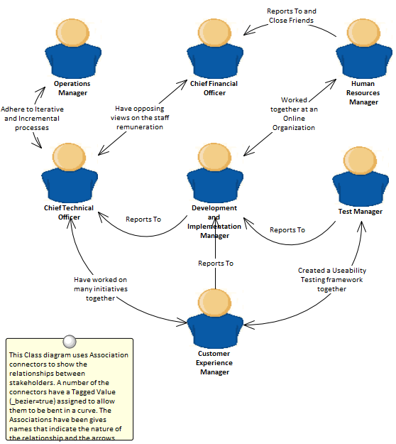

001. Acceptance
and Evaluation Criteria
008. Non-Functional
Requirements Analysis
035. Metrics
and Key Performance Indicators (KPIs)
038. Risk
Analysis and Management
039. Roles
and Permissions Matrix
041. Stakeholder
List, Map, or Personas
045. Benchmarking
and Market Analysis
046. Business
Capability Analysis
Business Modelling Techniques
Enterprise Architect provides a sophisticated and flexible
Business Analysis Modelling platform that can be used by the analyst and others
from strategic planning through to product support.
It has extensive support for a wide range of business Modelling techniques and
allows these techniques to be used in isolation or together to create
compelling and expressive models that will delight audiences, including high
level executives and technology developers alike.
The techniques can be used by any discipline, including managers, architects,
designers, implementers, testers and more, but they are particularly useful for
the Business Analysts.
This topic provides a description of fifty of the most commonly used Business
Analysis techniques and describes the most important tools that can be used to
perform the technique, with links to more detailed explanations about how to
use the individual tools.
It is conveniently aligned with the BABOK Guide v3 and so
provides welcomed help for the Business Analyst and explains practically how to
use Enterprise Architect to perform the techniques described in the Guide.
For example, all analysts will understand the importance of Stakeholder
Modelling to the success of an endeavour, but typically find it difficult to
know where to start and how to create useful models to communicate with
stakeholders, and to represent their concerns and interests in a model.
The Stakeholder List, Map, or Personas techniques list more than ten tools that
can be used to help model stakeholders, leaving the analyst free to choose
whatever is most appropriate for their initiative.
This diagram shows the use of a Boundary element to create an Onion diagram
representing the stakeholders influence on an initiative.
Analysis
Analysis
techniques are fundamental to the craft of business analysis and provide a way
of examining a situation and determining the needs and formulating possible
solutions to the problem or opportunity.
Enterprise Architect can be used to perform a variety of analysis techniques
and provides a formidable set of tools that give the analyst the power to
perform the techniques ultimately aimed at delivering value to the
stakeholders.
The subject of the analysis can be strategic, tactical or solution concerns and
regardless of the type of stakeholder or audience a powerful set of models can
be constructed to communicate the findings and decisions to the stakeholders
from the executive level down to implementation teams.
01.
Acceptance and Evaluation
Criteria
Enterprise
Architect can be used to define both Acceptance and Evaluation Criteria and
expressive reports can be created that can be used to communicate with
important stakeholders.
Acceptance criteria are expressed in a testable form and high level criteria
must be able to be broken down into statements that can be tested or measured.
Enterprise Architect is the ideal tool to define and record values for the
criteria.
If detailed numerical analysis needs to be performed to determine overall
scores Enterprise Architects scripting interface could be used or the elements
could be exported to a spreadsheet.
02.
Business Rules Analysis
Policies and
Business Rules are critical to the success of an organisation; they inform the
way that processes are performed and guide operational business decision
making.
Modeling the Policies and Business Rules in Enterprise Architect helps you to
link business rules to the policies that define them, and in turn to business
goals.
Enterprise Architect allows all these elements to be created and managed, and
analysis can be performed using a number of tools to determine implementation
of the rules and how a particular business or technical solution implements the
business rules and therefore the policies.
This section
lists the main tools available in Enterprise Architect that can be used to
perform this business analysis technique.
There is also a wide range of additional tools that a modeler might find
suitable when applying the technique in a particular context.
The complete list of tools is available from the topic Business Modelling Tools.
The Business
Rules Model provides a way of formally defining business rules, the way they
are sequenced and the domain elements they relate to.
Learn More: Business
Rules Model
The Relationship Matrix is a powerful and
compelling tool for visualizing the relationships between two sets of elements.
Business Rules can be related to a number of different sets of elements,
including Policies Use Cases, User Stories, Functional Requirements and
Business Processes.
A number of different Matrices could be created with the Business Rules on one
axis and a different set of elements on the other axis in each of the matrices.
The Matrices can conveniently be saved as resources and also exported to a
Spreadsheet file.
Learn More: Relationship
Matrix
A Business Rule
is not defined as an element type in any of the built-in Toolbox palettes but
can be created as a type using the Unified Modeling Language (UML) extension
mechanism of Stereotypes.
It is typically a model administrator or librarian that will set up the
Stereotype but it can be applied by any modeler by setting the name in the
'Stereotype' field in the element's property sheet.
Learn More: Stereotyping
The Traceability
Window is a useful window that allows a modeler to visualize the connections
between elements in the repository.
This is useful to show how Business Rules are connected to other elements in
the model and in turn how those elements are connected.
Business rules can be related to a wide range of elements including Policies,
Requirements, Business Process and more and all of these relationships would be
visible through the traceability window.
Learn More: Traceability
Window
The Specification Manager is the primary tool for
working with text based elements such as Policies and Business Rules.
These and other elements can be created directly in the Specification Manager
and their name and descriptive text can be added in a compelling Word Processor
or Spreadsheet like view.
Other built-in properties such as status, version and phase can be managed
directly in the columns of the Specification Manager and where property lists
are available these can be chosen or changed from drop down lists.
Additional properties in the form of Tagged
Values can also be managed from within the Specification Manager.
The Policies and Business Rules visible in the Specification Manager can be
included on diagrams if necessary and linked to other modelling elements.
Changing any of the Requirement's details in the Specification Manager will
update the element in all other locations such as diagrams and windows and vice
versa.
Learn More: Specification
Manager
03.
Data Mining
Data mining
typically examines large amounts of data from a variety of points of view in an
attempt to discover useful patterns and relationships in the data that will
facilitate decision making.
This data resides outside the Enterprise Architect repository and the analysis
will typically be undertaken by specialist tools; however, there are several
tools available in Enterprise Architect that can help.
Requirements can be used to define the goals and scope of data mining, Class
Diagrams can be used to define the information to be mined, and the Database Builder can be used to define the
tables where data exists, or alternatively to define views that are needed for
the data mining.
The Database Builder could also be used to run SQL queries on live databases to
find patterns and relationships in the data.
An Artifact could be used to create an element representing the results with a
hyperlink to an external file that contains the results of the data mining
exercise.
This section
lists the main tools available in Enterprise Architect that can be used to perform
this business analysis technique.
There are also many additional tools that a modeler might find suitable when
applying the technique in a particular context.
The complete list of tools is available from the topic Business Modelling Tools.
Class diagrams
can be used to define the information that needs to be mined and to provide a
conceptual view of the data for business and non-technical stakeholders.
The Classes in the diagrams can be related to goals and requirements defined in
the Requirements diagram and also to tables in diagrams representing the
Database Tables and Views.
Learn More: Class
Diagram
The Database Builder can be used to define the
tables where data exists or alternatively to define views which are needed for
the data mining.
The Database schemas can be reversed engineered into the repository and then
analyzed to define how they can be used as part of the data mining effort.
The Database
Builder could also be used to run SQL queries on live databases to find
patterns and relationships in the data.
Learn More: Database
Builder
A Requirements Diagram can be used to create a
visual representation of the requirements used to define the goals and scope of
data mining.
This will act as a guide to direct the effort of data mining and ensure that
the correct data is analyzed.
Learn More: Requirements
Diagram
An Artifact could
be used to create an element representing the data mining with a hyperlink to
an external file that contains the results of the data mining exercise.
This is a powerful mechanism that allows the data mining results to be launched
directly from the repository even though they are stored and maintained in
another system.
Learn More: Artifact
04.
Decision Analysis
Enterprise
Architect has support for decision modeling and helps you to display the
definition of the problem and the possible solutions graphically.
There is a range of tools that can be used to model decisions, including
Decision Tables, Decision Trees, models of pros and considerations, and
computer based simulations.
A Requirements Diagram can be used to
create a visual representation of the information, knowledge, and decision
making involved in a more complex business decision.
Business rules models can be used to show the rules that are used to make part
of a complex decision.
These can in turn be linked to Business Processes to show where and when the
decisions are made.
If detailed numerical analysis is required, models can be exported to a
spreadsheet.
This section
lists the main tools available in Enterprise Architect that can be used to
perform this business analysis technique.
There is also a wide range of additional tools that a modeler might find
suitable when applying the technique in a particular context.
The complete list of tools is available from the topic Business Modeling Tools.
The Decision Table Editor can be used simply to
record the conditions and the conclusions that form the basis of decision
making.
Alternatively implementation code can be generated using the Enterprise
Architect Simulation Library (EASL) code generation macros.
It uses a clear and understandable interface allowing the analyst to enter
conditions, condition value columns, defined values that act as a decision
point, and one or more conclusions.
Learn More: Decision
Table Editor
A Decision Tree
is a diagram that is part of the Strategic Modeling Technology and uses a
visual notation to represent a series of decisions and possible outcomes.
It can be used in either a descriptive or predictive manner to visualize
outcomes and decision points.
It is particularly useful when a complex or intractable decision needs to be
formally recorded.
The diagram or elements such as the outcomes can be linked to other elements in
the repository such as solution options.
Learn More: Decision
Tree Diagram
Business
Process Simulation (BPSim)
The BPSim
facility provides a way of simulating processes written in Business Process
Model and Notation (BPMN) providing valuable results that can be used in
decision analysis.
The BPMN models are augmented with extra data as parameters to the simulation.
It allows structural and capacity analysis to be performed providing for pre
and post execution optimization.
Enterprise Architect allows you to construct the Process models and enter the
appropriate data which is then sent to an internal or external BPSim Simulation
engine.
Learn More: Business
Process Simulation
A Business Rules
Model can be used to define the conditions under which business rules are
applied.
The Business Rules and the Rule Tasks can be related to Policies, Requirements,
Business Processes and other model elements creating an articulated model that
shows how the business rules are applied in a given context.
Learn More: Business
Rules Model
A Requirements Diagram can be used to create a
visual representation of the information, knowledge, and decision making
involved in a more complex business decision.
The diagram can also be used to define the problem statement clearly and to
propose alternate propositions.
Learn More: Requirements
Diagram
An Artifact can
be used as a placeholder for a Decision Analysis file or web address such as a
spreadsheet or document that resides external to the repository.
The Artifact element can be hyper-linked to the external document allowing it
to be launched from within Enterprise Architect.
This provides a convenient way to reference the document inside the model for
example by linking other elements such as Requirements to the document.
Learn More: Artifact
Import
and Export Spreadsheets
The Spreadsheet
Import and Export facility can be used to export modeling data out of
Enterprise Architect so that analysis can be done outside the tool.
Alternatively it can be used to import information into Enterprise Architect
such that representations of the decisions can be created inside the tool.
A specification that describes the mapping between column in the spreadsheet
(csv file) and fields in Enterprise Architect must be created before a transfer
of data can be made.
Learn More: Import
and Export Spreadsheets
05.
Document Analysis
Document Analysis
is supported in Enterprise Architect by a number of facilities, including the
ability to represent or store the source documents inside the model, and being
able to record the findings of the analysis and link them to the document
sources.
Enterprise Architect has a fully featured document editor built into the core
product, which allows documents to be created directly in the tool or imported
into the tool.
The document can also be represented as a document element inside the model,
which can be linked to a document (or URL) that lives outside the model.
The information and insight gained in the analysis can be linked to the
documents and presented visually or in documentation.
This section
lists the main tools available in Enterprise Architect that can be used to
perform this business analysis technique.
There is also a wide range of additional tools that a modeler might find
suitable when applying the technique in a particular context.
The complete list of tools is available from the topic Business Modeling Tools.
When analyzing a
Document Maintenance items can be used to record a variety of items including
Defects, Changes, Issues, Tasks, Decisions and Events.
These Items can be added to an Artifact or any other element that represents
the document being analyzed.
Applicable metadata can be stored against each item including its Name,
Description, Status, Priority, who it was Raised by, Completion details and
more.
Learn More: Maintenance
Items
The documents
that need to be analyzed will typically be stored in a file system or in an
external document repository.
An Artifact can be used as a placeholder (or proxy) for the document that is
being analyzed and the external document can be launched from Enterprise
Architect regardless of its location.
This is a powerful mechanism that allows Discussions
or Maintenance Items to be added to the element effectively recording the
document analysis in the Enterprise Architect Repository along with the other
modeling elements such as Requirements, Business Rules, System Components and
more.
Learn More: Artifact
The Document
Artifact provides a location to record analysis, discussions and comments about
the document under analysis.
The documents that need to be analyzed will typically be stored in a file
system or in an external document repository.
A Document Artifact can be used as a placeholder (or proxy) for the document
that is being analyzed and the external document can be launched from
Enterprise Architect regardless of its location.
The Document Artifact also has a word processor file where structured analysis
can be written.
Learn More: Document
Artifact
The Element Discussion window is a useful tool for
adding discussions or comments about a document.
This could be used in conjunction with the Artifact element that represents the
external document to be analyzed.
It is a convenient facility that allows commentary to be made on elements without
contaminating the notes with discussions that ultimately don't contribute to
the integrity of the model.
A Discussions summary window
conveniently displays the Discussions for all elements in the repository.
Learn More: Element
Discussions
06.
Financial Analysis
Formal financial
analysis would typically be conducted outside of Enterprise Architect but less
formal analysis can be recorded inside the repository.
Either way, Enterprise Architect has tools that can assist in modeling the
financial analysis information and relating it to other parts of the model such
as solution options.
An Artifact can be used as a placeholder for documents or web based information
that resides outside the repository such as a Spreadsheet or a Word Process
Document.
A hyperlink can be used to provide quick access to the external file from
within the model.
The Document Artifact facility can be used to create a word processor document
inside the repository and define the analysis with links to other parts of the
model such as Components or other architectural elements that describe the
solution options.
An Artifact can
be used as a placeholder for a Financial Analysis file or web address such as a
spreadsheet or document that resides external to the repository.
The Artifact element can be hyper-linked to the external document allowing it
to be launched from within Enterprise Architect.
This provides a convenient way to reference the document inside the model for
example by linking other elements such as Requirements to the document.
Learn More: Artifact
A Document Artifact
can be used to create Financial Analysis information, conveniently storing the
document inside the repository.
A template could be specified for the document, which could be reused for other
initiatives.
Other model elements that exemplify some aspect of the Financial Analysis, such
as features and solution options, can be dragged into the document as links.
Learn More: Document
Artifact
07.
Interface Analysis
Any complex
system will typically have a number of interfaces; these can be any of a wide
range of types, including user interfaces, component interfaces, application
programming interfaces and hardware interfaces.
Enterprise Architect has built-in facilities to model all these types of
interfaces and they can be connected into a single articulated model.
There is support for a wide range of user interfaces including applications,
web pages, and hand held devices such as Tablets and Phones, including devices
such as iPhones, Android and Windows phones.
Business interfaces such as people outside the organization or business
processes can also be modeled.
A system is
typically composed of a number of subsystems which are often connected to each
other through know interfaces.
These interfaces are where data or control signals are exchanged between the
Components.
These can be modeled using the Unified Modeling Language Interface element that
allows operations and services to be defined.
Components can expose these Interfaces graphically in a diagram as Provided or
Required interfaces allowing the Components to be connected.
Learn More: Component
Diagram
Hardware Nodes
and Devices need to interface to other Nodes and Devices through published
Interfaces.
These can be described with UML Ports that can be used to describe aspects of
the interface such as IP Addresses and Protocols.
These describe the physical or virtual connections between the various pieces
of hardware that make up the system.
Learn More: Deployment
Diagram
Wire Frame
diagrams allow a modeler to create powerful and expressive models of the user
interface for a variety of hand held devices, including Apple, Android and
Windows phones and tablets.
Screen dialogs and web pages can also be modeled.
The physical appearance of the devices themselves can be represented and
configured by the use of a number of Tagged
Values.
Patterns can be used to automatically create a base model for a device.
A range of controls are available applicable to each type of device including
Android Widgets, Apple Controls and Windows Tiles.
Learn More: Wireframe
Diagram
08.
Non-Functional Requirements
Analysis
Enterprise
Architect is a sophisticated requirements development and management platform
allowing any type of requirement to be modeled including built in support for
Non-Functional requirements or quality attributes as they are sometimes called.
These requirements typically express how well the behavior expressed by the
functional requirements must perform.
Enterprise Architect has a purpose built element to model these important
requirements and a facility to link them to any other elements including Use
Cases, User Stories and Functional Requirements.
These relationships can be displayed in a variety of diagrams and windows or
generated out to documentation making them available to project stakeholders
who are not working in the repository.
There is also the opportunity to reuse these requirements across multiple
projects or programs of work.
The Specification Manager is the primary tool for
working with text based elements such as Non Functional Requirements.
These and other requirements can be created directly in the Specification
Manager and their names and descriptive text can be added in a compelling Word
Processor or Spreadsheet like format.
Other built-in properties such as status, version and phase can be managed
directly in the columns of the Specification Manager and where property lists
are available these can be chosen or changed from drop down lists.
Additional properties in the form of Tagged
Values can also be managed from within the Specification Manager.
The Non-Functional Requirements visible in the Specification Manager can be included
on diagrams if necessary and linked to other modeling elements.
Changing any of the Requirement's details in the Specification Manager will
update the element in all other locations such as diagrams and vice versa,
since there is a single element in the Repository that is visible in many
views.
Learn More: Specification
Manager
The Requirements
diagram can be used to model Non Functional Requirements.
These requirements are often displayed using a package element showing the
category of the requirement.
In other diagrams the modeler can show the Non Functional requirements linked
to other elements such as Use Cases and User Stories or Functional
Requirements.
Traces could also be created between the Non Functional Requirements and system
components or Interfaces that implement the requirements.
Learn More: Requirements
Diagram
Enterprise
Architect has a powerful and flexible documentation generator that can produce
Docx and RTF Word Processor files, PDF and HTML reports.
The Non Functional Requirements stored in the repository can be conveniently
generated and included in documentation.
The Requirements can be included under headings in the report that group the
Non Functional requirements by quality attributes such as Extensibility,
Maintainability and more.
A sophisticated template facility exists that provides a range of in-built
templates and allows the user to create their own templates defining styles,
images and a wide range of other formatting options.
Learn More: Documentation
Team members will
often want to comment on or question the definition or details of a Non Functional
Requirement.
The Element Discussion facility provides a perfect mechanism for conducting
these conversations about Non Functional Requirements.
The discussions are posted in a purpose built window and are kept separate from
the notes and details of the element.
This ensures that the Requirements definition is not 'polluted' with comments
that are intended for modelers rather than other stakeholders.
As the discussions are posted a summary window conveniently displays the latest
entries across the entire repository.
Learn More: Element
Discussions
The Relationship Matrix is a powerful and compelling
tool for visualizing the relationships between two sets of elements.
The Non Functional Requirements can be related to a number of different sets of
elements including Use Cases, User Stories, Functional Requirements and System
Components and the Interfaces that implement them.
A number of different Matrices could be created with the Non Functional
Requirements on one axis and a different set of elements on the other axis in
each of the matrices.
The Matrices can conveniently be saved as resources and also exported to a
Spreadsheet file.
Learn More: Relationship
Matrix
Import
and Export Spreadsheets
It is common for
analyst to have started their modeling of Requirements including Non Functional
Requirements in a Spreadsheet or to want to manipulate existing elements in a
Spreadsheet.
Enterprise Architect has a flexible and configurable tool for importing and
exporting elements from a CSV file which can be imported and exported from a
Spreadsheet.
Any type of element can be imported or exported to the spreadsheet file but it
is particularly common to use the facility with Requirements including Non
Functional Requirements.
Names, Description, built-in properties and extended properties in the form of Tagged Values can be imported or exported.
The tool provides a flexible Specification window where the mapping between
element properties and the columns in the Spreadsheet and other parameters can
be defined and saved.
Essentially the columns of the spreadsheet define the properties and each
element is specified in a row.
Learn More: Import
and Export Spreadsheets
The Baseline Tool
is used as a type of backup and recovery tool and can capture a snapshot of the
Non Functional Requirements at a point in time and then at a later time the
repository can be compared to this (or another baseline) for the purpose of
determining what has changed.
It is possible to revert the current model back to a state captured in the
baseline at the level of a granular change.
Learn More: Baselines
09.
Observation
Observations are
used to illicit information and provide understanding and clarification by
viewing a person performing a process in its context.
Typically the observations are recorded with paper notes and photography but
Enterprise Architect can assist with preparing for the observation by detailing
the objectives and the planning approach.
The results of the observation including scanned notes and photographic images
can be stored in Enterprise Architect, ensuring that they are available to all
modelers.
The results of the observation, including process diagrams and statements of
how a process could be improved, can be modeled in Enterprise Architect and
linked to a variety of elements.
Tools and material used by the process performer such as scanners and procedure
manuals can also be modeled in Enterprise Architect.
The Image Manager is a tool for managing images
such as photos and screen shots and other pictures in a variety of formats.
Often when observations are made an analyst will take one or more photos of a
user in situ in their work environment.
An analyst might also capture screen shots of the current applications the user
is working with.
All these digital assets can be imported into the Image Manager and then
applied to elements in diagrams as an alternate image.
Alternatively a picture contained in the Clipboard can be pasted directly into
a diagram.
Learn More: Image
Manager
An analyst might
take a photograph or video of a user in their work environment as a way of
recording the steps the user is performing to complete a task.
This can provide a valuable resource for analyzing a complex sequence of tasks.
While a photo or screen shot in a range of formats can be stored in the Image Manager a video file would have to
reside on disk or in a system outside the Enterprise Architect repository.
The Artifact element can be used as a proxy for the videos inside the
repository allowing the video (or other file) to be launched directly from
Enterprise Architect.
This can be achieved by dragging the file onto a diagram or by creating an Artifact
and assigning the Video as a file in the Properties sheet of the element.
Learn More: Artifact
A document
Artifact is a word processor type of file available inside Enterprise Architect
and can be used to plan an observation including its purpose and details of the
user's environment.
It can also be used to record the observations themselves ensuring that the
details are easily accessible to other modelers and close to other modeling
elements.
Elements and diagrams in the repository can be dragged into the Document
Artifact as links to things like a Concept Model or Business Processes and
Business Rules that might be related to the user's tasks.
Other related files can be imported into the Image
Manager or linked to from an Artifact.
Learn More: Document
Artifact
The Calendar provides a convenient way to record
and present important temporal information such as events and meetings in
calendar format inside the repository.
Observation sessions can be entered into the Calendar and setup as recurring if
needed.
Event subtypes can be configured to add Observation as a Meeting Type.
Learn More: Calendar
Model Mail can be used to
notify and remind people of a planned observation session and to notify them
after the session about outcomes, decisions and required actions.
Links to model elements, diagrams, Matrices, Team Reviews and a variety of
other items can be added.
Learn More: Model
Mail
010. Process Analysis
Enterprise Architect
allows processes to be modeled and these models can be analyzed to assess them
for how effective and efficient they are and to view any opportunities for
change or improvement.
There is a powerful element discussion facility allowing modelers to discuss
processes and analyze the processes collaboratively even when the modelers are
geographically dispersed.
Enterprise Architect also has a powerful simulation facility to simulate the
models and derive information about the models identifying any points in the
process that can be improved.
Business
Process Simulation (BPSim)
The BPSim
facility provides a way of simulating processes written in Business Process
Model and Notation (BPMN) providing valuable results that can be used in
processes analysis.
The BPMN models are augmented with extra data as parameters to the simulation.
It allows structural and capacity analysis to be performed providing for pre
and post execution optimization.
Enterprise Architect allows you to construct the Process models and enter the
appropriate data which is then sent to an internal or external BPSim Simulation
engine.
Learn More: Business
Process Simulation
The Element Discussion window is a convenient facility
that allows commentary to be made on processes (or any element) without
contaminating the notes with discussions that ultimately don't contribute to
the integrity of the model.
The Element Discussion window allows a modeler to initiate a discussion and for
others to reply.
It is a perfect way for stakeholders and analysts to discuss aspects of a
process as its being analysed.
A Discussions summary window conveniently
displays the Discussions for all elements in the repository.
Learn More: Element
Discussions

Element
Maintenance Items can be used with Business Processes to capture problems,
changes, issues, tasks, events and decision that affect an individual
Activities or whole Processes.
Learn More: Maintenance
Items
011. Root Cause Analysis
Enterprise
Architect has a number of tools that can assist with Root Cause Analysis,
allowing the context of the problem to be identified and the analysis of the
causes to be modeled.
One or more Issue elements can be used to describe the Problem Statement in
detail, including the context of the problem, which might be business or
technology processes or application components or hardware.
A decision
diagram can be used as a way of describing the causes using the Five Whys
approach.
One or more Issue
Maintenance Items can be used to record a problem statement that helps to
formally describe the problem.
These can be added to the repository at any level from a high level package
such as a Functional Requirements Package down to an individual Requirement
level or for any other element type.
Applicable metadata can be stored against each item including its Name,
Description, Status, Priority, who it was Raised by, Completion details and
more.
Learn More: Maintenance
Items
A Decision Tree
is a diagram that is part of the Strategic Modeling Technology and uses a
visual notation to represent a series of decisions and possible outcomes.
It can be used in either a descriptive or predictive manner to visualize
outcomes and decision points.
The Decision Tree diagram can be used to create a Five Whys diagram starting
with the problem and fanning out.
Learn More: Decision
Tree Diagram
The Requirements
diagram can be used to model the problem statement and the context of the
problem, using an Issue element available from the 'Requirements' Toolbox
pages.
Other elements that are relevant to the problem - such as things that are
impacted by the problem - can be recorded on the diagram.
These can include Business Capabilities, Business Processes or Technology
Capabilities, Services, Applications or Hardware.
Learn More: Requirements
Diagram
Collaboration
Collaboration
techniques are critical to the success of any initiative.
The ability of team members to work together and to share their thoughts,
ideas, analysis and designs contributes greatly to the success of any
initiative.
Enterprise Architect has been built from the ground up as a collaborative
modelling platform that allows people from a variety of disciplines and
backgrounds to share their ideas and contribute to moving stakeholder value
from a promise through to the implementation of a system feature that delivers
that value.
There are a wide variety of techniques and Enterprise Architect has tools that
can assist an analyst when performing these techniques.
012. Brainstorming
Enterprise
Architect can be used for all aspects of Brainstorming, from session planning
and definition of evaluation criteria to recording the ideas during the session
and their evaluation during wrap up.
The Document Artifact allows the modeler to create a document that is stored in
the repository and available to all modelers.
It can be used to describe the Brainstorming session, recording such things as
the definition of the area of interest, timing and stakeholders.
This document can be sent by model mail to all stakeholders.
A Mind Mapping diagram can be used to record the ideas that emerge during the
session, allowing them to be presented visually in a compelling and neutral
format.
In the wrap up Checklists can be used to asses each idea against the evaluation
criteria.
This section
lists the main tools available in Enterprise Architect that can be used to
perform this business analysis technique.
There is also a wide range of additional tools that a modeler might find
suitable when applying the technique in a particular context.
The complete list of tools is available from the topic Business Modeling Tools.
The Document
Artifact is like a word processor file available inside the repository and it
is a convenient way of creating a plan for a Brainstorming Session.
It can also be used to record the discussions, ideas and information that
surfaces during the session.
It has the advantage of being able to reference elements and diagrams contained
in the Project Browser by the
creation of hyperlinks.
Built-in templates can be used for the document or user defined templates can
be created and reused if required with other Brainstorming sessions.
Learn More: Document
Artifact
A MindMapping Diagram is a productive way to
capture the ideas that are expounded during a Brainstorming session.
With a Central Topic defined, Main Topics can be added to structure thoughts
and then Topics are added as new ideas emerge.
The Notes window could be kept open
and used to record the details of ideas.
Alternatively the Element Discussions window
could be used to record the discussions and dialogs.
Learn More: Mind
Mapping
Element
Discussion provide a convenient way of recording what is being discussed in a
Brainstorming session.
If a plan for the Brain storming session has been created using a Document
Artifact a scribe could record the discussion using the Document Artifact
element.
Alternatively if a Mind Mapping diagram is being used detailed discussion could
be recorded against the topics in the Mind Mapping diagram.
Learn More: Element
Discussions
The Calendar can be used to schedule a
Brainstorming session and model users can see this meeting in the context of
the other events scheduled for the project.
Learn More: Calendar
Model Mail is a perfect way
to let people know about a planned Brainstorming session and also to inform
them when the results of the session have been completed.
If a plan has been developed for the Brainstorming session in a Document
Artifact this can be attached by inserting a link to the element using the
Insert Quick Link function.
Any other material such as diagrams matrices can also be attached in the same
way.
Learn More: Model
Mail
A Checklist can
be used to assess each of the ideas against predefined evaluation criteria.
The Checklist items can be configured to express the criteria and provide a
compelling visual representation of the quality of the ideas.
Learn More: Checklist
013. Collaborative Games
Collaborative
games are aimed at encouraging stakeholders to collaborate with the intent of
getting a common understanding of a problem or solution.
Enterprise Architect has a Document Artifact that can be used to define the
game, including its purpose, the process and the rules.
The outcomes or decisions that result from running the game can either be
entered into the document or modeled in a diagram.
The outcomes can be sent to each participant using the Model Mail feature, and the element discussion
facility can be used to discuss the outcomes and any actions that are required.
This section
lists the main tools available in Enterprise Architect that can be used to
perform this business analysis technique.
There is also a wide range of additional tools that a modeler might find
suitable when applying the technique in a particular context.
The complete list of tools is available from the topic ‘Business Modeling
Tools.
The Document
Artifact is a convenient element that allows a word processor document to be
created inside the repository.
This can be used to create the objectives and definition of the game and its
rules.
The logistics including setup and required materials and briefings for the game
facilitator can also be included.
The document can contain the list of participants and links to relevant
elements in the repository can be created by dragging element diagrams and
other items into the document.
The outcomes of the game and subsequent discussion can all be entered into the
document.
Learn More: Document
Artifact
The Calendar provides a way to record and present
important temporal information such as events and meetings in calendar format.
Collaborative Games can be entered into the Calendar and setup as recurring if
needed.
Event subtypes can be configured to add Collaborative Games as a Meeting Type.
Learn More: Calendar
Model Mail can be used to
notify and remind people of a Collaborative Game and to notify them after the
game has been played about outcomes and decisions and required actions.
Links to model elements and diagrams, matrices, team reviews and a variety of
other items can be added.
Learn More: Model
Mail
014. Focus Groups
Focus Groups are
a powerful and inclusive way of eliciting ideas and opinions about a product or
service; Enterprise Architect has the facilities to plan and conduct the
sessions, record the ideas and distribute the results.
The meeting planning and logistics can be detailed in the focus group plan
document, a discussion guide can be created to assist the facilitator with
pre-defined questions, and both these documents can be written inside the tool
using a Document element.
The ideas and opinions can also be recorded during the sessions in the form of
a Mind Map, and these can be analyzed and the results disseminated to the
participants and a wider audience.
A convenient Project Calendar can be used to record the times for the focus
group meeting, and a Model Mail
message could be sent to remind the participants of the meeting.

A Document
Artifact can be used as an alternative to using a MindMapping
Diagram for recording the information, opinion and ideas collected
during a Focus Group meeting.
A template could be specified for the document and the details of the session
recorded in the Document.
Other model elements that have relevance or importance to the Focus Group
discussions can be dragged into the document as links.
The Document Artifact can also be used to plan the Focus Group meeting
describing things such as the objective, timings and the list of participants.
Learn More: Document
Artifact
A Mind Mapping
diagram can be used to record the stakeholder's statements during a Focus Group
meeting.
A Central Topic can be created that represents the theme of the meeting and if it
has been planned and structured, Main Topics can be added prior to the
commencement of the meeting.
It is useful to have a scribe creating the MindMapping
Diagram as it allows the facilitator to interact with the
stakeholders.
If the screen is projected it allows the stakeholders to visualize the
information, opinions and ideas as they are recorded.
Learn More: Mind
Mapping Diagram
The Calendar provides a way to record and present
important temporal information such as events and meetings in calendar format.
Focus Groups can be entered into the Calendar and setup as recurring if needed.
Event subtypes can be configured to add Focus Groups as a Meeting Type.
Learn More: Calendar
Element Discussions are a useful way
to enter comments made by stakeholders or others in a Focus Group meeting.
They can be entered for any element in the Repository including Packages so
could be entered at the level of an individual element such as a Requirement or
for a group of Requirements such as the Security Requirements Package.
Learn More: Element
Discussions
Model Mail can be used to
notify and remind people of a Focus Group Meeting and to notify them after the
meeting about outcomes and decisions and required actions.
Links to model elements and diagrams, matrices, team reviews and a variety of
other items can be added.
Learn More: Model
Mail
015. Interviews
An interview is a
common technique used to elicit information from one or more participants and
Enterprise Architect can be used from the planning phase to define the
logistics and questions, during the interview itself to record the answers, and
during the analysis and dissemination to publish the results.
When the interview is structured a list of proposed and alternate questions
could be defined in a Document created inside the model.
The Project Calendar can be used to record the time the meeting will be
conducted and Model Mail could be
used to remind people of the time.
A Business
Analyst will typically plan an interview and define the approach and if it is a
structured interview a list of questions will be defined in advance of the
interview.
A Document Artifact can be used as a place to store this information directly
inside the model.
A template could be specified for the document and the answers to structured or
unstructured question recorded into the Document.
Other model elements that exemplify some aspect of the interview, such as
topics of discussion can be dragged into the document as links.
Learn More: Document
Artifact
The Calendar provides a way to record and present
important temporal information such as events and meetings in calendar format.
Interviews can be entered into the Calendar and setup as recurring if needed.
Event subtypes can be configured to add Interviews as a Meeting Type.
Learn More: Calendar
Element Discussions are a useful way
to enter comments made by stakeholders or others in a Interview.
They can be entered for any element in the Repository including Packages so
could be entered at the level of an individual element such as a Requirement or
for a group of Requirements such as the Security Requirements Package.
Learn More: Element
Discussions
Model Mail can be used to
notify and remind people of an Interview and to notify them after the interview
about outcomes and decisions and required actions.
Links to model elements and diagrams, matrices, team reviews and a variety of
other items can be added to Model Mail messages.
Learn More: Model
Mail
016. Mind Mapping
Enterprise
Architect has a flexible and easy to use Mind Mapping diagram which can be used
for structuring thoughts or for note taking in a variety of situations from
stakeholder workshops, focus groups, interviews and collaborative games.
They can be used to map the thoughts and ideas of an individual or a group of
people and provide a non-confronting and appealing way of recording
information.
The power of Enterprise Architect can be used to create the Mind Map but then
other elements such as a set of Requirements that have been derived from
analysis of the Mind Map can be linked back to elements in the Mind Map to show
how the Requirements trace back to ideas expressed in a workshop.
This provides a powerful analysis audit trail of the provenance of Requirements
or other solution precursors such as Capabilities, Goals, Business Objectives
and more.
A Mind Mapping
diagram can be used to record a wide range of information in a compelling
format that mimics the way we think about ideas as a graph of thoughts.
It can also be used in Workshops, Focus Groups and other meetings with
Stakeholders or team members as a note taking tool.
Other elements in the model can be connected to the Topics and Sub Topics in
the Mind Mapping diagram to create powerful and expressive relationships
between the ideas and their specification or implementation.
Learn More: Mind
Mapping Diagram
The Traceability
Window is a useful window that allows a modeler to visualize the connections
between elements in the repository.
This is useful when used with elements in a MindMapping diagram to show how the
topics are related to each other but also to view how the topics and sub topics
are related to other elements in the repository such as Requirements or System
Components.
Learn More: Traceability
Window
017. Workshops
Enterprise
Architect has a range of tools that can assist with planning, scheduling and
conducting workshops.
Depending how formal a workshop is, a plan might be required and an Agenda and
Minutes might also be necessary.
This can be achieved using a Document Artifact.
A Calendar could be used to record
the date, time and location of the meeting.
Model mail could be used to invite people to the workshop and to let them know
when the minutes have been completed.
Links to important information in the model can also be added to a mail
message.
During the workshop Mind Maps could be drawn and Element
Discussions posted, new concepts or Glossary terms recorded and
Slide Shows presented.

A Mind Mapping
diagram can be used to record the stakeholder's statements during an
elicitation workshop.
The statements are not categorized but simply recorded and later during the
analysis phase of Requirement's development they can be converted to the
appropriate elements or retained and the Requirements can be traced back to the
topics effectively creating a record of how the Requirement was derived.
This is a powerful technique that shields the stakeholders from needing to know
the modeling languages and allows them to concentrate on articulating their
needs, it also frees the analyst up from concerns about which element to use to
model the statements.
The derivation of requirements from mind mapping topics is usually performed in
the analysis phase of the Requirement's Development process.
Learn More: Mind
Mapping Diagram
The Element Discussion window is a convenient
facility that allows commentary to be made on elements without contaminating
the notes with discussions that ultimately don't contribute to the integrity of
the model.
Modelers often place notes on diagrams or write questions in the element notes
fields and these are distracting and must be removed when formal documentation
is generated from the model.
The Element Discussion window allows a modeler to initiate a discussion and for
others to reply.
It is a perfect way for discussing requirements.
A Discussions summary window conveniently
displays the Discussions for all elements in the repository.
Learn More: Element
Discussions
A Business
Analyst will typically plan a workshop and define the approach, and if it is a
structured interview a list of questions will be defined in advance of the
workshop.
A Document Artifact can be used as a place to store this information directly
inside the model.
A template could be specified for the document and the answers to structured or
unstructured question recorded into the Document.
Other model elements that exemplify some aspect of the workshop, such as topics
of discussion, can be dragged into the document as links.
Learn More: Document
Artifact
Model Views provide
alternate views of the elements and diagrams stored in the Project Browser.
The Slide show is particularly useful for presenting a series of diagrams during
a workshop and solves the problem of needing to remember the location of the
diagrams in the Project Browser.
Any number of slide shows can be created and diagrams can be added regardless
of their type or location in the Project Browser.
The progression from slide to slide can be automated or triggered manually.
Learn More: Model
Views
A Concept Model
will act as a guiding model for discussions with many stakeholders and ideally
a skeleton model should be created prior to the commencement of any workshop.
The Concept Model should be kept simple and domain elements should be given a
name and a description or a responsibility and initially only important
connections should be made between elements.
As the workshop progresses new elements will be uncovered and can be added
directly to the model giving the stakeholders confidence that their needs and concerns
are being addressed and managed well.
Enterprise Architect allows domain models to be created using the UML Class diagram.
Learn More: Class
Diagram
Prior to a
workshop an analyst can populate the Project
Glossary with the existing terms and their meanings that have been
gleaned from reading project documentation such as a Business Case or Vision
Document.
During the workshops, as new terms are uncovered they can be added to the
Glossary and their definitions can be discussed and entered or deferred till
later in the analysis phase.
Learn More: Glossary

The Calendar provides a way to record and present important
temporal information such as events and meetings in calendar format.
Workshops can be entered into the Calendar and setup as recurring if needed.
Event subtypes can be configured to add Workshop as a Meeting Type.
Learn More: Calendar
Model Mail can be used to
notify and remind people of a workshop and to notify them after the workshop
about outcomes and decisions and required actions.
Links to model Elements, Diagrams, Matrices, Team Reviews and a variety of
other items can be added.
Learn More: Model
Mail
Modeling
Modeling
techniques are at the core of what a business analyst will use to describe the
problem, opportunity or a number of candidate solutions.
This set of techniques provide a way for the analyst to clarify their own thoughts
but also to communicate with stakeholders using diagrams, matrices, lists,
documents and other visual mechanisms.
Enterprise Architect is a powerful modeling platform that supports a wide range
of languages, methodologies and standards.
Regardless of whether a team is using an iterative and incremental process or a
more traditional process there are tools to support the techniques.
The Agile analyst will find tools to support User Stories and the more
traditional analyst will find tools to support Use Cases and scenarios and
more.
018. Concept Modeling
A Concept Model
is an implementation-independent representation of the nouns that are important
for an organisation, domain or industry.
It is a business model and should not be confused with information or data
models.
Enterprise Architect has tools to create and maintain this model, with the
flexibility to present the model graphically in a diagram or textually in a
list view, a published document or a web page.
The elements in the Concept Model can be linked to any number of up-process or
down-process elements, such as business goals and capabilities.
This section
lists the main tools available in Enterprise Architect that can be used to
perform this business analysis technique.
There is also a wide range of additional tools that a modeler might find
suitable when applying the technique in a particular context.
The complete list of tools is available from the Business
Modeling Tools Help topic.
A Class Diagram can be used to model important
concepts in the domain.
The concepts are modeled using UML Classes and Names, Descriptions and other
details such as Attributes can be entered for each Class.
The concepts can be related to each other using relationships such as the
Association and Generalization.
These concepts can then be used throughout the model as a type of Glossary,
including in element notes where they can be referenced.
Learn More: Class
Diagram
The Glossary is a
purpose-built tool for managing important concepts and their meanings, which
can be included in documentation.
If words defined in the Glossary are used in element or diagram notes they will
automatically appear as hyperlinks and the meaning will conveniently appear in
a pop-up window.
Learn More: Glossary
An Entity
Relationship Diagram is a conceptual or abstract model of information for a
system often created as a precursor for the development of a database schema.
The Entities and their attributes can be modeled and the relationships between
one or more Entities can be drawn.
Learn More: Entity
Relationship Diagram
National
Information Exchange Modeling (NIEM)
Niem is an XML-based
information exchange framework that is the result of collaboration between all
levels of American government.
Enterprise Architect has extensive support for the framework allowing
organizations to create subsets of the standard for the purpose of exchanging
standards compliant messages.
Conceptual models can be transformed into Niem compliant representations.
Learn More: National
Information Exchange Modeling (NIEM)
Ontologies are a
useful and formal way of describing the concepts in a domain and include the
names and definition of the types, their properties, and their relationships
with each other.
Enterprise Architect implements the Object Management Group's Ontology
Definition Metamodel (ODM) and supports both the Resource Description Framework
(RDF) and the Web Ontology Language (OWL).
Learn More: MDG
Technology for ODM
The Schema Composer is a powerful tool that can be
used to define a range of formal schemas from a model.
The tool allows a Conceptual model such as a Class diagram to be converted to a
formal XML schema without the user needing to understand the underlying
complexity of the XML machinery.
Learn More: Schema
Composer
Enterprise
Architect has a powerful and flexible documentation generator that can produce
Docx and RTF Word Processor files, PDF and HTML reports.
The terms defined in the Glossary or the Classes used to define the concepts
can both be conveniently generated and included in documentation.
In the case of terms defined in the Glossary, this includes the term Name,
Description and Type.
In the case of terms defined as Classes it includes the term Name, Description
and a variety of other information including Attributes, Tagged Values and Connections with other
terms.
A sophisticated template facility exists that provides a range of in-built
templates and allows the user to create their own defining styles, images and a
wide range of other formatting options.
Learn More: Documentation
Visual Filters
can be used to hide or dim parts of the diagram so that other parts can be
emphasized.
This is particularly useful when presenting a Class
Diagram of the important concepts.to a team in a meeting or
demonstration.
Context Filtering is easy to setup and will emphasize the currently selected
diagram element and its directly connected elements.
Learn More: Visual
Filters
019. Data Dictionary
A data
dictionary, or metadata repository as it is sometime called, is used to define
a standard definition of data elements so that stakeholders can use and apply
the data elements consistently and these can be shared by a number of
solutions.
These data elements are often stored in a spreadsheet, word processing tool or
even a purpose built meta-data repository.
With Enterprise Architect, the definitions can be stored in the same repository
as the solutions and can be referenced by all stakeholders, including business
and technical roles.
A data dictionary can be created that defines data elements, including details
such as names, aliases descriptions and allowable values, and including whether
multiple values are permissible.
There is also the ability to create examples of usage (Class Instances) that
are derived from the definition, which can help some stakeholders understand
the element defined in the dictionary.
This section
lists the main tools available in Enterprise Architect that can be used to
perform this business analysis technique.
There is also a wide range of additional tools that a modeler might find
suitable when applying the technique in a particular context.
The complete list of tools is available from the topic Business Modeling Tools.
A Class Diagram can be used to model important
data elements in the domain.
The elements are modeled using UML Classes and Names, Aliases, Descriptions and
other details such as Attributes can be entered for each Class.
The elements can be related to each other using relationships such as the
Association and Generalization.
These elements can then be used throughout the model as a data dictionary,
including in element notes where they can be referenced.
Learn More: Class
Diagram
The Database Builder can be used to create a Data
Dictionary.
The elements are modeled as Tables and Names, Aliases, Descriptions and other
details such as Attributes can be entered for each table.
The Attributes can be given Names and Descriptions and other details such as
the number of allowable values can be defined.
Learn More: Database
Builder
An Entity
Relationship Diagram can be used to define the elements of a Data Dictionary.
There are a number of different representations that can be used but the style
used in Enterprise Architect uses rectangles to represent Entities, ellipses to
represent Attributes and diamonds to represent connections between Entities.
Learn More: Entity
Relationship Diagram
Enterprise
Architect has a powerful and flexible documentation generator that can produce
Docx and RTF Word Processor files, PDF and HTML reports.
The elements defined in the data dictionary can be conveniently generated and
included in documentation.
This includes the element Name, Alias, Description, Type and a variety of other
information including Attributes, Tagged Values
and Connections with other elements.
A sophisticated template facility exists that provides a range of in-built
templates and allows the user to create their own, defining styles, images and
a wide range of other formatting options.
Learn More: Documentation
020. Data Flow Diagrams
These diagrams
show how data flows through an information system, which processes or external
entities create or consume the data, and where it is stored.
They do not detail the sequencing between processes, which would be represented
by process models.
Enterprise Architect provides a Data Flow Diagram
that modelers can use to create expressive diagrams with click-through
drill-down from the Concept diagram right through to the lowest level diagram.
This section
lists the main tools available in Enterprise Architect that can be used to
perform this business analysis technique.
There is also a wide range of additional tools that a modeler might find
suitable when applying the technique in a particular context.
The complete list of tools is available from the topic Business Modeling Tools.
The Data Flow Diagram (DFD) is part of the
Structured Systems Analysis and Design Method and is used to show the way that
data flows through a system including the Processes, Data Stores and Entities
that relate to the data.
Learn More: Data
Flow Diagram
021. Data Modeling
Enterprise
Architect has profound support for Data Modeling.
Data models describe the things that are important in a domain or solution, and
their attributes (or columns), including their types and the relationships
between them.
Data modeling can be done for a number of reasons, including to clarify and
communicate and also to implement a solution on a particular technology
platform.
Data modeling can occur at a number of different levels, from the conceptual
data models that are analogous to concept models and are used for clarifying
and communicating, through logical data models that include data normalization
to physical models used for implementation.
Enterprise Architect has a number of diagrams such as the Class diagram and the
Data Modeling diagram that can be used to visualize the models, and a number of
purpose built tools such as the Database Builder
and the Schema Composer that will assist
a modeler to be highly productive.
This section
lists the main tools available in Enterprise Architect that can be used to
perform this business analysis technique.
There is also a wide range of additional tools that a modeler might find
suitable when applying the technique in a particular context.
The complete list of tools is available from the topic Business Modeling Tools.
Conceptual data
models can be defined using a Class Diagram
and these often provide an abstract (conceptual) precursor for logical and
physical data models.
These information models can be created at any level of detail ranging from a
simple list of elements to elements related to each other with connectors and
containing Attributes.
Learn More: Class
Diagram
The Database Builder is the primary tool for working
with live databases and the data models that represent them.
The tool can be used to model a database from scratch including a wide range of
database objects such as Tables, Views, Stored Procedures and more.
Databases can be generated from the data models and data models can be reversed
engineered from live database connections.
A modeler can work with the database objects in tabular form or in a diagram.
Learn More: Database
Builder
An Entity
Relationship Diagram is a conceptual or abstract model of information for a
system often created as a precursor for the development of a database schema.
The Entities and their attributes can be modeled and the relationships between
one or more Entities can be drawn.
Learn More: Entity
Relationship Diagram
XML schemas are
typically used as a standards-based data definition for the exchange of
information between systems or parts of systems.
Enterprise Architect has support for modeling schemas and generating schemas
(xsd) documents based on these models.
There is also the ability to reverse engineer a schema document into a schema
model.
Learn More: Generate
or Import XML Schema
Model
transformations are a powerful productivity tool that can be used with data
modeling.
The transformation engine has a number of built-in but configurable templates
which can be used to transform a conceptual class model into a logical or
physical database schema.
The generated schema can then also be generated to Database Manipulation
Language (DDL) and or using the Schema Composer
applied directly to an existing database.
Learn More: Model
Transformation
The Schema Composer allows a modeler to work with
industry standard schema definitions to create the structure for messages
flowing between organizations, systems, or parts of systems.
The Schema Composer supports a number of international standard models and
hides much of the underlying complexity inherent with working with complex
schemas.
It also supports the generation of the messages in a number of formats,
including XSD, RDFS and JSON.
Learn More: Schema
Composer
Visual Filters
can be used to hide or dim parts of the diagram so that other parts can be
emphasized.
This is particularly useful when presenting a Data Modeling diagram to a team
in a meeting or demonstration.
Context Filtering is easy to setup and will emphasize the currently selected
diagram element and its directly connected elements.
Learn More: Visual
Filters
022. Decision Modeling
Enterprise
Architect can be used for decision modeling at any level.
It provides tools such as the Decision Table
and Decision Tree to model simple decisions, and a Requirements
Diagram can be used to show the breakdown of a complex decision into
parts that can be linked by dependencies.
Business Rules can be referenced as a source of the business logic for making
decisions.
This section lists
the main tools available in Enterprise Architect that can be used to perform
this business analysis technique.
There is also a wide range of additional tools that a modeler might find
suitable when applying the technique in a particular context.
The complete list of tools is available from the topic Business Modeling Tools.
A Requirements Diagram used to model decisions is
a visual representation of the information, knowledge, and decision making
involved in a more complex business decision.
Decisions can be represented by stereotyped Classes and take a set of inputs
and select from a defined set of possible outputs.
Business rules and other mechanism for defining business logic can be included.
Inputs to decisions can be Classes representing the data that is needed as
input to the decision.
An Artifact can be used to represent the source document or parties from which
the necessary decision logic has been determined.
Learn More: Requirements
Diagram
The Decision Table Editor can be used simply to record
the conditions and the conclusions that form the basis of decision making.
Alternatively implementation code can be generated using the Enterprise
Architect Simulation Library (EASL) code generation macros.
It uses a clear and understandable interface allowing the analyst to enter
conditions, condition value columns, defined values that act as a decision
point, and one or more conclusions.
Learn More: Decision
Table Editor
A Decision Tree
is a diagram that is part of the Strategic Modeling Technology and uses a
visual notation to represent a series of decisions and possible outcomes.
It can be used in either a descriptive or predictive manner to visualize
outcomes and decision points.
It is particularly useful when a complex or intractable decision need to be
formally recorded.
The diagram or elements such as the outcomes can be linked to other elements in
the repository such as solution options.
Learn More: Decision
Tree Diagram
023. Functional Decomposition
Enterprise
Architect has been built as a platform for managing models of complex systems
including business, information and technology systems.
The tool allows business concepts such as outcomes, capabilities and processes
to be decomposed.
Information models can be broken down from high level concepts to details and
technology models of components and devices can also be decomposed.
There are a wide range of tools for working with and representing these models
starting with the Project Browser
that displays elements in a hierarchy allowing the user to expand or collapse
levels thus revealing or hiding detail.
Decomposition can also be represented in diagrams using elements such as the
Aggregation connector on a single diagram or the ability to drill down through
a whole chain of connected diagrams from a high level element in a value chain
down to the low level processes.
The composition
of a system can be shown using a Component Diagram
where systems are displayed in a hierarchy including drill down to other
Component Diagrams.
This allows a complex system that is made up of a number of subsystems to be
modeled.
Learn More: Component
Diagram
The
Organizational Chart Diagram is part of the Strategic Modeling group of
diagrams and shows the structure of an organization including officials, roles
responsibilities, business units or departments.
The roles or departments can be displayed in a diagram using a tree layout or
in a list view.
Any number of Tagged Values can be
added to the elements or connectors to add additional information as required.
The diagram can be used to show the decomposition of an organization by roles
or business units.
Learn More: Organizational
Chart Diagram
Functional
Decomposition can be achieved by creating a feature hierarchy using the Project Browser without the need to create a diagram.
A system Feature is a good way to capture the high level capabilities of a
system and these can be created directly in the Project Browser.
Additional features can be added under each first level feature creating a
second level of features.
These second level features can have features nested under them creating a
third level.
The resulting tree of Features provides a useful way of describing Functional
Decomposition that can be presented to and reviewed by stakeholders.
Learn More: Project
Browser
Functional
Decomposition can be achieved by using a Requirements diagram to create a
hierarchy of system features.
A system Feature is a good way to capture the high level capabilities of a
system, and these can be broken down to a number of levels using a tree
structure created with an Aggregation or Composition Relationship.
This provides a compelling representation of scope that can be reviewed by the
stakeholders and used as a guide through the initiative.
Gaps and out-of-scope features should be identified as early as possible and
the tree amended to reflect these.
Out of Scope features could be left as part of the tree but annotated in some
way to indicate that they are out of scope such as by using a stereotype or by
using color with a diagram legend.
Learn More: Requirements
Diagram
The BPMN Business Process Diagram is useful for
modeling business processes that form part of a process hierarchy.
Enterprise Architect allows the modeler to define a decomposition of processes
that can be drilled down to from a higher level.
It allows a modeler to document the business process including the way a
process starts, what work is performed and how it ends.
Gateways and connecting lines determine the sequence of activities.
The Business Process Diagram is
emerging as an important standard for modeling business processes.
Learn More: Business
Process Diagram
The Specification Manager is the primary tool for
working with text based elements such as Features, Requirements and Components.
These and other elements can be created directly in the Specification Manager and
their name and descriptive text can be added in a compelling Word Processor or
Spreadsheet like format.
Other built-in properties such as status, version and phase can be managed
directly in the columns of the Specification Manager and where property lists
are available these can be chosen or changed from drop down lists.
Additional properties in the form of Tagged
Values can also be managed from within the Specification Manager.
The Specification Manager will reflect the hierarchical structure of elements
and can use level numbering if this has been turned on.
Learn More: Specification
Manager
The Activity
diagram, which is part of the Unified Modeling Language, is a useful
alternative to other diagrams such as Flow Charts and Business Process
Diagrams.
They allow a modeler to describe the sequence of behaviors including how they
start, what work is performed and decisions that change the flow and the way
the process ends.
Learn More: Activity
Diagram
ArchiMate
Business Process Diagram
Allows the high
level description of a business process showing what triggers the process and
the order of processes.
If detailed representations are required BPMN
Business Process diagrams or UML
Activity diagrams can be used.
Learn More: ArchiMate
024. Glossary
Enterprise
Architect supports two different ways of creating a glossary.
The most obvious way is to use the built-in Project
Glossary which is available from the Publish ribbon.
This provides a convenient way for modelers to store terms and their associated
meanings grouped by user defined categories.
An alternative (and perhaps more sophisticated) method is to create a Class
diagram of the terms, linking the elements to create relationships between the
terms.
Enterprise
Architect has a convenient Project Glossary that can be used to store a list of
terms and their definitions.
The terms can be grouped into any number of user defined categories such as
business, technical, domain specific grouping such as medical, scientific, or
aviation.
The power of having the terms defined in the model is realized when modelers
write description in model elements as these will be linked automatically to
terms defined in the Project Glossary.
The Glossary is a
purpose built tool for managing project terms and their meanings which can be
included in documentation.
If words defined in the Glossary are used in element or diagram notes they will
automatically appear as hyperlinks and the meaning will conveniently appear in
a pop-up window.
Learn More: Glossary
A Class Diagram can be used to model important
concepts in the domain.
The concepts are modeled using UML Classes and Names, Descriptions and other
details such as Attributes can be entered for each Class.
The concepts can be related to each other using relationships such as the
Association and Generalization.
These concepts can then be used throughout the model as a type of Glossary,
including in element notes where they can be referenced.
Learn More: Class
Diagram
Enterprise
Architect has a powerful and flexible documentation generator that can produce Docx
and RTF Word Processor files, PDF and HTML reports.
The terms defined in the Glossary or the Classes used to define the concepts
can both be conveniently generated and included in documentation.
In the case of terms defined in the Glossary, this includes the term Name,
Description and Type.
In the case of terms defined as Classes, it includes the term Name, Description
and a variety of other information including Attributes, Tagged Values and Connections with other
terms.
A sophisticated template facility exists that provides a range of in-built
templates and allows the user to create their own, defining styles, images and
a wide range of other formatting options.
Learn More: Documentation
025. Process Modeling
A process model
can be used to model a wide range of sequential activities including business
processes, system processes or even the flow through an algorithm in a
programming module.
Enterprise Architect supports a variety of ways to model processes including
the Unified Modeling Language (UML) Activity diagrams, Business Process Model
and Notation (BPMN) Business Process Diagrams and Flow Charts as part of the
Strategic Diagramming set.
These can be drawn at any level and drill down functionality is provided
allowing a modeler to click through from a high level diagram such as a value
chain down to the task level representations.
The process elements can be linked to a wide range of other elements including:
Business Rules, Polices, Standard Operating Procedures and Use Cases or User
Stories.
The tool supports
both Current State and Future State modeling and transitions can be modeled
showing the time sequence of changes between the current state and the future
state.
Enterprise Architect also has the ability to run model simulations from these
models allowing powerful insights to be gained that will assist with improving
efficiency and effectiveness.
Enterprise
Architect supports a number of different languages and techniques for
performing Process Modeling.
The choice of language will depend on what has been defined as a standard by
the organization or pragmatic considerations such as what the customer or
subject matter experts will be most comfortable with.
Business Process
Diagrams are part of the Business Process Model and Notation (BPMN) standard
and allow a modeler to document a business process, including the way the
process starts, what work is performed and how it ends.
Gateways and connecting lines determine the sequence of activities.
Current state and Future state process models can be created and managed in
Enterprise Architect.
The diagrams can be organized into a process hierarchy allowing drill down from
high level to lower level diagrams.
BPMN is emerging as an important standard for modeling business processes and
has gained much traction with business and technical communities.
It can be automatically generated to the Business Process Execution Language
(BPEL), which is an XML based language that can be ingested by a number of
orchestration engines.
Learn More: Business
Process Modeling
Activity diagrams
are one of the Behavioral Unified Modeling Language diagrams and allow a
modeler to describe the sequence of behaviors including how they start, what
work is performed and decisions that change the flow and the way the process
ends.
They are a useful alternative to using other diagrams such as flow charts and
business process diagrams.
The syntax of activity diagrams when Actions and Pins are used can be drawn at
the execution level and express detailed system semantics.
Learn More: Activity
Diagram
A flow chart can
be used to represent a process, workflow or algorithm and is a general purpose
diagram for representing a sequence of steps and decisions.
Connecting lines determine the sequence of the steps in the flow chart.
Flow charts are an easy to understand representation of the steps in a process.
The syntax of the diagrams are much easier to understand than their more
advanced cousins: the BPMN Business Process
Diagram and the UML Activity diagrams.
Learn More: Flow
Chart Diagram
Allows the high
level description of a business process showing what triggers the process and
the order of processes.
If detailed representations are required BPMN
Business Process diagrams or UML
Activity diagrams should be used.
Learn More: ArchiMate
A Data Flow Diagram provides a diagrammatic
representation of the way data (information) flows through an information
system.
It shows where the data originates and where it is consumed and stored.
These diagrams typically show the functions (or processes) that operate on the
data but do not indicate timing or sequencing.
Learn More: Data
Flow Diagrams
Business Rules
are often associated with the Activities described in a process model and best
practice suggests they should be managed separately from the Activities but
they should be linked to the Activities they apply to.
Learn More: Business
Rules Model
The activities
(steps) in a business process are typically performed by a role in the
organization (or by a system on behalf of a role).
Thus an Organizational Chart will provide a useful source for these roles and will
help the analyst to express the relationship between the steps in the process
and the roles that perform them.
It is also common for a business unit or stakeholder to be responsible for a
process and these units or roles can be related to the Activities either using
diagram relationships or Tagged Values.
Learn More: Organizational
Chart Diagram
The Baseline Tool
is used as a type of comparison and backup and recovery tool.
The tool can capture a snapshot of the Process Models at a point in time and
then at a later time the repository can be compared to this (or another
baseline) for the purpose of determining what has changed.
It is possible to revert the current model to a state captured in the baseline
at the level of a granular change.
This is a useful tool when working with Processes or any other model that
typically has sign off milestones.
Baselines are typically taken at
important milestones and given a memorable name such as 'After Stakeholder
Final Workshop'.
Baselines can be applied at the Package level and can be applied regardless of
what type of elements are contained in the Package.
Learn More: Baseline
Tool
Visual Filters
can be used to hide or dim parts of the diagram so that other parts can be
emphasized.
This is particularly useful when presenting a Business Process diagram to a
team in a meeting or demonstration.
Context Filtering is easy to setup and will emphasize the currently selected
diagram element and its directly connected elements.
Learn More: Visual
Filters
026. Prototyping
Enterprise
Architect has a variety of facilities that can assist with prototyping and in
many ways everything in the tool is a kind of prototype.
Whiteboard and hand drawn diagram styles can be used to create appealing
mockups of information.
There is also a powerful facility to create user interface pages and screens
and wire frame models for web or client applications including user controls
such as drop down lists bullets and check boxes.
The wire framing feature supports modern hand held devices such as phones and
tablets including Apple and Android devices.
There is a diagram slide-show that allows an analyst to present a complete
mockup of the screens that would be part of a scenario.
Evolutionary prototypes can also be developed by generating code from the
system models in Enterprise Architect.
The Model Views facility provides a useful Slide
Show folder where any number of diagrams can be added to a slide show.
This is a useful tool for presenting prototypes particularly when there are a
number of diagrams that describe the user interface in different states such as
how the interface responds to a button click.
The slide show can be configured to run automatically with a specified time
interval or slide progression can be performed manually.
Any number of slide shows can be created and they could be used for a variety
of purposes such as showing the interface on different devices, phones, tablets
or computers.
Learn More: Model
Views
Wire Frame Diagrams
allow a modeler to create powerful and expressive models of the user interface
for a variety of hand held devices including Apple, Android and Windows phones
and tablets.
Screen dialogs and web pages can also be modeled.
The physical appearance of the devices themselves can be represented and
configured by the use of a number of Tagged
Values.
Patterns can be used to automatically create a base model for a device.
A range of controls are available applicable to each type of device including
Android Widgets, Apple Controls and Windows Tiles.
Learn More: Wireframe
Diagram
Visual Filters
can be used to hide or dim parts of the diagram so that other parts can be
emphasized.
This is particularly useful when presenting a prototype to a team in a meeting
or demonstration, allowing irrelevant elements to be filtered out.
Context Filtering is easy to set up and will emphasize the currently selected
diagram element and its directly connected elements.
Learn More: Visual
Filters
027. Sequence Diagrams
Enterprise
Architect has a full and rigorous implementation of the Unified Modeling
Language static and dynamic diagrams including the Sequence
Diagram.
These diagrams are useful for a range of purposes where the Classifiers (or
Instances) that participate in achieving an outcome interact together, sending
and receiving messages.
A common use is to show how a Use Case or Scenario will be implemented, or how
a series of system components interact.
The messages can have parameters defined that can be used to define the
payloads that are contained in the message.
Enterprise
Architect provides support for creating and viewing Sequence diagrams.
These can be modeled at a classifier or an instance level.
Element or Object lifelines can be displayed and they can be created and
destroyed.
Synchronous and Asynchronous messages are supported that can be related to
classifier operations, including the sending of parameters and return values.
Fragments are supported and can be used to create highly expressive diagrams.
Ports and Interfaces can be represented on the diagrams, allowing complex
solution architectures and designs to be modeled.
There is also a facility to automatically create Sequence diagrams from a
running system's stack trace, which allows powerful analysis to be performed
and comprehensive and accurate documentation to be generated.
Learn More: Sequence
Diagram
028. State Modeling
Enterprise
Architect has a full and rigorous implementation of the Unified Modeling
Language static and dynamic diagrams including the State diagram.
Any entity in the system can have a StateMachine
diagram and these can be conveniently located under the entity in
the Project Browser.
The tool has rich support for many of the powerful aspects of these machines
including the ability to generate code directly from the diagrams.
The StateMachine diagrams can also be automatically converted into a State
Table.
A StateMachine diagram is a powerful way of
presenting information about the lifetime of a business or technical entity.
It can be used to describe the important conditions (States) that occur in an
entity's lifetime or cycles.
Typically only entities that have important stages in their lifetime are
modeled with StateMachine diagrams.
The entity is said to transition from one State to another as specified by the
StateMachine.
Triggers and Events can be described that allow the state transition to occur
and Guards can be defined that restrict the change of state.
Each State can define the behaviors that occur on entry, during and exit from
the State.
Enterprise
Architect allows the StateMachine diagram to be automatically converted to a
State Table.
The State Table Editor is often a more intuitive way of working with the
StateMachine for some users.
The StateMachine
can be exported to a Spreadsheet file allowing the States and Transitions to be
anlayzed.
There is also
support for simulation of the StateMachine and the creation of an Executable
StateMachine that can be used to generate a language specific behavioral
'engine' for multiple software products on multiple platforms.
Learn More: StateMachine
Diagram
Visual Filters
can be used to hide or dim parts of the diagram so that other parts can be
emphasized.
This is particularly useful when presenting the StateMachine
diagram to a team in a meeting or demonstration.
Context Filtering is easy to setup and will emphasize the currently selected
diagram element and its directly connected elements.
Learn More: Visual
Filters
029. Use Cases and Scenarios
Enterprise
Architect has a full and rigorous implementation of Use Cases and Scenarios
including being able to create Use Case Diagrams that include Scenarios.
The Use Cases and Scenarios can be included on a number of other diagrams to
show how business processes are automated or which component realizes the Use
Case.
There is also an innovative editor where the detailed steps of Use Cases and
Scenarios can be created and these can be generated to documentation thus
completely dispensing with the need to create Word Processor files to document
Use Cases.
The steps can also be automatically generated to a number of diagram types
including Activity and Sequence diagrams.
The generated diagrams can be synchronized with the steps if they change and
the diagrams redrawn.
The Scenario Builder is a productive and unique
tool and editor that allows the analyst to work with the text of Use Cases and
Scenarios directly inside the model.
Many analysts will be familiar with creating long and voluminous Word Processor
documents describing the details of Use Cases.
With the Scenario Builder the descriptions and steps of Scenarios can be
entered directly into the repository and linked to other elements.
Alternate and Exception paths can be defined including branch and re-entry
points.
Diagrams representing the steps in a scenario can be generated and
automatically synchronized.
Constraints including Preconditions and Post-conditions can be defined and Test
Cases automatically generated.
Elements that have a relationship to the selected Use Case are listed in a
convenient Context Reference list.
Learn More: Scenario
Builder
The Use Case Diagram is a simple and powerful way of
describing the goals the users of a system (or entity) want to achieve.
It describes who wants to achieve a particular goal but not how the goal will
be delivered.
Use Case diagrams can be simple or structured and relationships such as
Include, Extend and Generalization can be added to refine the model.
A system (or entity) boundary can be added with a descriptive name showing
clearly that Use Cases reside inside the system and Actors outside.
Learn More: Use
Case Diagram
The Relationship Matrix can be used to define and
display the relationships that exist between Use Cases and other model elements
including up-process and down-process elements.
The up-process elements could include Business Processes, Stakeholder,
Functional or Non-Functional Requirements, Business Use Cases and more.
The down-process elements could include Components, Building Blocks, Test Cases
and Experience models and more.
Learn More: Relationship
Matrix
The Traceability
Window automatically displays the relationships that exist between Use Cases
and other model elements including up-process and down-process elements.
The traceability tree view can be conveniently expanded to see deeper
relationships and elements displayed in the window can be located in all
diagrams in which they appear.
Learn More: Traceability
Window
The Specification Manager can be used as an
alternate tool for working with Actors and Use Cases.
The names, descriptions and properties of the Actors, Use Cases and Scenarios
can be conveniently created, viewed and edited in a list resembling a Word
Processor or Spreadsheet presentation.
Learn More: Specification
Manager
Even though the Scenario Builder provides a productive way of
defining Use Cases and Scenarios, there will be situations where formal
documentation is required describing the Use Case.
The Document Generator can be used to
create high quality corporate documentation using a built-in Use Case Report
template, or an analyst can define their own custom template.
An HTML report can also be created, allowing click-through and drill-down.
Learn More: Documentation
030. User Stories
Enterprise
Architect has a purpose built User Story element that can be used to create a
story.
It is possible to link the User Story element to any number of other elements
including business Goals, Objectives high level stakeholder requirements and
detailed requirements resulting from grooming the story, constraints and more.
These relationships can be conveniently viewed in diagrams or in the Traceability window.
The Specification Manager is the
perfect tool for working with the text of the User Story and provides a
welcomed alternative to diagrams for those more familiar with working with word
processors and spreadsheets.
The Specification Manager can be used as an
alternate tool for working with User Stories.
The names, descriptions and properties of the User Stories can be conveniently
created, viewed and edited in a list resembling a Word Processor or Spreadsheet
presentation.
Additional information entered as Tagged Values
can also be viewed as columns in the Specification Manager.
Information in the list can be filtered and the elements can be located in
diagrams.
Learn More: Specification
Manager
User Stories will
often be used by a number of different team members; some people - particularly
those working on the business side - might prefer to work with the User Stories
in document format.
The Document Generator can be used to
create high quality User Stories directly from the model, using built-in
templates or user defined templates.
The User Stories
can also be automatically generated to HTML, allowing the stories to be viewed
through a Browser or incorporated with an Intranet or Extranet site
Learn More: Documentation
The Relationship Matrix can be used to define and display
the relationships that exist between User Storiesand other model elements
including up-process and down-process elements.
The up-process elements could include: Business Processes, Stakeholder,
Functional or Non-Functional Requirements and more.
The down-process elements could include: Components, Building Blocks, Test
Cases and Experience models and more.
Learn More: Relationship
Matrix
The Traceability
Window automatically displays the relationships that exist between User Stories
and other model elements including up-process and down-process elements.
The traceability tree view can be conveniently expanded to see deeper
relationships and elements displayed in the window can be located in all
diagrams in which they appear.
Learn More: Traceability
Window
The Document Generator can be used to create high
quality corporate documentation using built-in Report templates or an analyst
can define their own custom template.
A html report can also be created allowing click-through and drill-down.
Learn More: Documentation
Project Management
Project
Management techniques are critical for the successful delivery of a project or
initiative.
There are a wide range of techniques used to organise a team ranging from very
informal techniques such as Backlog Management used with Agile teams to very
prescriptive techniques such as Risk Analysis and Management used in large and
highly structured organisations.
Enterprise Architect provides a wide range of tools to support a variety of
project management techniques that can be used with any methodology or process.
The tools allow project management information to sit beside or be connected to
the underlying models which ensures that project management information is not
separate from the analysis information and models.
031. Backlog Management
Enterprise
Architect has a number of facilities that can be used to manage backlogs.
The most straight forward of these is the use of the built-in 'Priority'
property (attribute) that can be used to categorize requirements based on a set
of user-defined categories.
Every element also has a 'Phase' and a 'Version' field that could be used for
backlog management.
The Specification Manager allows the requirements
to be visualized and grouped by their priority or any other property such as
Complexity, Version, Phase or a Tagged Value.
The elements, regardless of type can also be ordered in the Project Browser.
The Package Browser provides a convenient list
view which is an alternative to using the Specification Manager and allows elements
to be sorted and grouped by one of more properties.
Model Views can
also be used to create one or more lists of elements that can be freely ordered
and managed irrespective of the elements' location in the Project Browser.
Every element in
the Repository has a number of built-in properties such as 'Version' and
'Phase' that can be useful for defining and working with Backlogs.
Some elements such as Requirements have a number of additional properties
including 'Priority' that can be used.
The 'Phase' and the 'Version' are free text fields so could be used to specify
a group of elements for a sprint, release or iteration.
The 'Priority' property can be given a discrete value defined in a list such
as: 'High', 'Medium', 'Low'.
Learn More: Element
Properties
In the Model Views Facility any number of Favorites
Folders can be created that can be used as a Backlog and can contain an ordered
list of any number of elements.
Elements can simply be dragged from the Project
Browser and dropped into the appropriately named Favorites folder.
The elements can be of the same or different types and can be freely ordered
within the list.
A number of other folders could be used to represent sprints, releases or
iterations.
Learn More: Model
Views
The Project Browser can be used to manage a
Backlog by simply ordering the elements in the tree view.
This can be achieved using the Up Arrow
button and Down Arrow button in the Project
Browser header bar, or a tree item's context menu.
This provides a simple but compelling way of ordering a list of elements as
part of a backlog management.
(The 'Allow Free Sorting' setting must be enabled on the 'General' page of the
'Preferences' dialog before items can be sorted in the Project Browser.)
Learn More: Project
Browser
The Specification Manager is a powerful tool for
working with requirements (or any other element) in a spreadsheet or word
processor style of view.
It provides a convenient text based interface that allows the properties of a
set of elements to be viewed and edited as a group.
The list of elements can be filtered based on any properties or Tagged Values, which provides a convenient way
of working with element lists for backlogs.
Learn More: Specification
Manager
The Package Browser provides a convenient way of
viewing the elements in a package in a spreadsheet like list with rows and
columns or as a Gantt chart showing resource allocation over time.
The list view displays the elements in a selected package as rows with their
properties viewable and editable in columns.
The elements in the list can be sorted or grouped by one or more properties allowing
for example high Priority, low Complexity requirements for Phase 3.1 to be
grouped.
Learn More: Package
Browser
032. Estimation
Enterprise
Architect has a built-in tool for creating estimates of project effort and cost
using Use Cases and Actors, based on Karner's 'Use Case Points Method'.
The Use Cases and Actors are assigned a complexity and then user-defined
environment and technical complexity factors are applied, with weightings to
calculate the effort and cost.
A metrics report can be created and included in a project's documentation.
This section
lists the main tools available in Enterprise Architect that can be used to
apply this business analysis technique.
There is also a wide range of additional tools that a modeler might find
suitable when applying the technique in a particular context.
The complete list of tools is available from the topic Business Modeling Tools.
Use Case
Estimation can be used to calculate the required effort to complete an initiative
or part of an initiative.
Environmental and Technical complexity factors can be defined and given weights
and values that determine how they influence the effort that is calculated for
an initiative.
Learn More: Use
Case Estimation
033. Item Tracking
Enterprise
Architect is a powerful modeling platform that has an impressive range of
ancillary tools over and above its core modeling functionality to assist the
modeler working in a dynamic business environment.
The implementation of a solution will take time and stakeholders will have
concerns and issues that won't have been present at the time they articulated
their needs and requirements.
These can be recorded in the model either at the level of the model or at the
level of an individual element such as a requirement or any other element.
The Element Browser is a tree view window that
displays one element at a time and presents the details of the element including
its name, Attributes, Constraints, Relationships, Tagged
Values and more.
In addition Maintenance Items are displayed and an edit window can be launched
to edit the items.
Learn More: Element
Browser
Maintenance items
can be used to record a variety of items including Defects, Changes, Issues,
Tasks, Decisions and Events.
These can be added to the repository at any level from a high level package
such as a Functional Requirements Package down to an individual Requirement
level or for any other element type.
Applicable metadata can be stored against each item including its Name,
Description, Status, Priority, who it was Raised by, Completion details and
more.
Learn More: Maintenance
Items
Enterprise Architect
has a powerful and flexible documentation generator that can produce Docx and
RTF Word Processor files, PDF and HTML reports.
Maintenance Items such as Issues, Defects and Decisions and more stored in the
repository can be conveniently generated and included in documentation.
The Maintenance Items can be included under the elements they apply to,
including high level Packages and low level elements.
A sophisticated template facility exists that provides a range of in-built
templates and allows the user to create their own, defining styles, images and
a wide range of other formatting options.
QA Reports can
also show the Maintenance Items aggregated across the repository, allowing
filtering and Item type restrictions to be defined.
Learn More: Documentation
034. Lessons Learned
Many processes
and methodologies include a post project review phase, where projects can be
analyzed and reviewed for successes, failures and opportunities for improvement
that would benefit future projects.
Enterprise Architect has a flexible Team Review
facility that allows any part of a model or practice to be reviewed, including
things such as naming conventions, modeling style, modeling language usage and
correctness and any other dimension of a project.
This facility is typically used during the execution of a project such as at
important milestones or every week or month, and can also be used at the end of
a project to gain value insights into how to improve future projects.
There is the ability to dynamically reference any part of the models, such as
elements, Packages and diagrams and these can be conveniently added to the
review by dragging and dropping them from the Project
Browser.
There is a flexible built-in word processor where text can be created and
formatted, making it available right inside the modeling environment.
A Document
Artifact can be used as an alternative to using the Team
Review facility for recording the Lessons Learnt.
A template could be specified for the document and the details of the session
recorded into the Document.
Other model elements that represent successes, failures or have some importance
to the lessons can be dragged into the document as links.
Learn More: Document
Artifact
The Team Review facility is a powerful tool for
assisting with a Lessons learned session regardless of the format of the
session.
Creating and recording a Lessons Learnt session directly in the model is useful
as it allows a reviewer to include links which reference parts of the
repository such as Requirements or Components.
There is a word processor document available that can be used to describe
aspects of the review and a template can be used to define the structure of the
document.
Any number of categories can be set up for the sessions and topics and
documents can be added to these to form a hierarchy.
Resources such as XML files and Images can be added under the Category, Topic
or Document.
A new Lessons Learnt Team Review could be set up at important project
milestones.
Learn More: Team
Review
The Calendar provides a way to record and present
important temporal information such as events and meetings in calendar format.
Lesson Learned sessions can be entered into the Calendar and setup as recurring
if needed.
Event subtypes can be configured to add Lessons Learned as a Meeting Type.
Learn More: Calendar
Model Mail can be used to
notify and remind people of a Lesson Learned session and to notify them after
the session about outcomes and decisions and required actions.
Links to model elements and diagrams, matrices, team reviews and a variety of
other items can be added.
Learn More: Model
Mail
035. Metrics and Key Performance Indicators (KPIs)
Enterprise
Architect provides a facility to create and view Metrics which can be assigned
to any element including packages and elements representing solutions.
A number of Metric Types have been provided in the base product but these types
can be changed to suit an organization's needs.
Alternatively if more detail is required a requirement could be used to create
the Metric and a number of Tagged Values
added to record the detailed information.
Element
Project Management Metric
Project
Management Metrics can be added to any element in the repository.
Typically they will be added to elements like solution Components as a way of
indicating how effective it is in meeting the objectives and how well it is
performing.
These details can be added to the notes of the Metric.
Learn More: Project
Management Items
When detailed
properties need to be assigned to a metric an element such as a Requirement
could be Stereotyped as a metric and a number of Tagged
Values could be added to record this information.
Learn More: Tagged
Values
036. Prioritization
Prioritization
allows business analysis information - including Requirements, Business Rules
and Processes - to be put into order of relative importance.
Enterprise Architect has a range of features that can assist including:
Priority and Difficulty for Requirements, and Complexity and Phase and Version
for all elements.
There is also a convenient Model Views window
that allows elements to be presented in a group filtered by any criteria such
as priority or phase.
Elements in a Package in the Project Browser
can be ordered according to priority, allowing a simple but effective ordered
list; this is typically done with elements such as Features in Feature driven
development.

Elements have a
number of properties that can be assigned to form the basis of prioritization.
These include Status, Phase, Version, Complexity and for Requirements
Difficulty and Priority.
Any number of other properties can be created using Tagged
Values and these can use pre-defined values with user interface
controls like drop-down lists or spin controls.
These properties can form the basis for search criteria to return a set of
prioritized elements.
Learn More: Requirement
Properties
The Model Search facility can be used to find a
set of elements that meet a particular set of criteria.
This is useful when prioritizing elements such as Requirements, Features, User
Stories, Scenarios and other elements.
A modeler can use a built-in search but would more typically devise their own
search using the powerful Query Builder or if required the SQL Editor or an
Add-in Search.
When the search is run a list of elements is returned that meet the conditions
and parameters defined in the search.
The search can be saved and run again at any time.
The elements returned in the search can be located in the Project Browser and diagrams, and a diagram
can then be saved as a Pattern.
Learn More: Model
Search
Model Views is a facility
that allows a modeler to create lists of elements in alternate views to the way
they are organized in the Project Browser.
Any number of Favorite folders can be created and these can be grouped into one
or more higher level folders.
This provides a mechanism for manually defining prioritization by simply
dragging elements from the Project Browser into the Favorites folder and
ordering them using the up and down arrow keys in the toolbar.
Alternatively elements can be listed using a built-in or user defined search
which can be used to select elements from anywhere in the repository based on
properties such as Complexity, Version, Phase and user defined properties
defined in Tagged Values
Learn More: Model
Views
The Project Browser provides a way to prioritize
elements by simply changing their order within a Package or containing element.
This can be achieved using the Up Arrow
button and Down Arrow button in the
Project Browser header bar, or a tree item's context menu.
This provides a simple but compelling way of prioritizing elements such as
Requirements, Features, User Stories and more, based on any criteria.
(The 'Allow Free Sorting' setting must be enabled on the 'General' page of the
'Preferences' dialog before items can be sorted in the Project Browser.)
Learn More: Project
Browser
Any number of
other properties can be created using Tagged
Values and these can use pre-defined values with user interface
controls like drop-down lists or spin controls.
These properties can form the basis for search criteria to return a set of
prioritized elements.
Learn More: Tagged
Values
037. Reviews
Enterprise
Architect has a flexible review facility called a Team
Review, which allows any type of review to be conducted including:
inspections, formal and informal walk-throughs, single issue reviews, desk
checks and pass-arounds.
One of the powerful aspects of the Team Review facility is that it is right in
the model, and elements - such as the work product being reviewed or related
artifacts - can be attached to the review and reviewers and others can open
them from the review window.
Any amount of text can be added in a document editor, allowing reviews to be
described and published.

The Team Review facility is a powerful tool for
assisting with a review.
Creating and recording a team review directly in the model is useful as it
allows a reviewer to include links which reference parts of the repository such
as Requirements or Components.
There is a word processor document available that can be used to describe
aspects of the review and a template can be used to define the structure of the
document.
Any number of categories can be set up for the reviews and topics and documents
can be added to these to form a hierarchy.
Resources such as XML files and Images can be added under the Category, Topic
or Document.
Model Links allow elements and diagrams to be dragged and dropped from the Project Browser creating links to these
elements from the review.
Learn More: Team
Review
The Calendar provides a way to record and present important
temporal information such as events and meetings in calendar format.
Reviews can be entered into the Calendar and setup as recurring if needed.
Event subtypes can be configured to add Review as a Meeting Type.
Learn More: Calendar
Model Mail can be used to
notify and remind people of a Review and to notify them after the review about
outcomes and decisions and required actions.
Links to model elements and diagrams, matrices, team reviews and a variety of
other items can be added.
Learn More: Model
Mail
038. Risk Analysis and Management
Enterprise
Architect supports the modeling of risks at the project or the element level.
A project manager or senior analyst will typically define risks at the project
level, whereas a business analyst, while they might assist with project risks,
would typically record risks at the level of requirements and modular units of
the system such as components.
Risks can be
assigned to any element in the repository and these can be managed through the
Risks Window which is part of the Project Maintenance group of windows.
Learn More: Project Management Items
The Risk Taxonomy
can be used to formally define risks and associated metadata applied
universally across one or more initiatives.
This includes definitions of Threats, Loss type, Contact Frequency, Loss
Magnitude, Risks and more.
Learn More: Risk Taxonomy
A Requirements Diagram can be created and any
number of Risk elements can be added to the diagram.
Modeling the risks using an element allows the Risks to be connected to other modeling
elements by diagram relationships.
This can be useful when the Risk applies to more than one elements or when it
is of concern to one or more stakeholders.
Learn More: Requirements Diagram
039. Roles and Permissions Matrix
Enterprise
Architect has a powerful and flexible Relationship
Matrix that can be used to visualize coverage of any two dimensions
including Activities and Roles.
Roles and Activities can be grouped into Packages and displayed in a matrix
view with visual indicators showing if an Activity has a Role covering it.
The matrix can be saved to the Resources window and recalled at any time.
The matrix can be included in automatically generated reports or exported to a
spreadsheet file for further analysis.
The Organization Chart diagram can be used to assist in the analysis of roles used
in the matrix.
The
Organizational Chart Diagram can be used to assist with the analysis of roles
that are used for the roles and permission matrix.
The diagram is part of the Strategic Modeling group of diagrams and shows the
structure of an organisation including officials, roles, responsibilities,
business units or departments.
The roles or business units can be displayed in a diagram using a tree layout
or in a list view.
Learn More: Organization Chart Diagram
Enterprise
Architect has a powerful and flexible Relationship
Matrix that can be used to visualize coverage of any two dimensions
including Activities and Roles.
The matrix is particularly useful for displaying information to managers and
non-technical stakeholders.
Roles and Activities can be grouped into Packages and displayed in a matrix
view with visual indicators showing if an activity has a role covering it.
The matrix can be saved and included in automatically generated reports or
exported to a spreadsheet file for further analysis
Learn More: Relationship Matrix
040. Scope Modeling
Enterprise
Architect has a number of facilities that can be used to model scope depending
on the type of depiction required.
Probably the most simple is the use of a Boundary element which can be used to
separate elements that are part of the scope - inside the Boundary and those
that are not part of the scope -outside the boundary.
The Boundary element is also formally part of the Unified Modeling Language
(UML) and can be used to define a system boundary as part of a Use Case diagram
where the Use Cases lie inside the Boundary and the Actors lie outside.
Scope can also be modeled using Features which are used to define conditions a
system must have and are typically arranged hierarchically.
The features can be defined in the Project
Browser and also displayed on a Requirements
Diagram.
Enterprise
Architect has a convenient and flexible Boundary element that can be used to
represent the boundary of a system.
It is a rectangular element that can be resized and styled to suit the elements
that are in scope and will thus reside inside the Boundary.
Out-of-scope elements could be placed outside the boundary to ensure that
stakeholders are clear about what is in and out of scope.
The elements placed inside the boundary could be Requirements, Features,
Components or any other element type that would help indicate scope.
Learn More: Boundary
A Use Case
diagram provides a convenient way of describing the scope of a System (or
Entity).
A System Boundary is used to mark the extent of the system and Actors (humans
or systems that gain value from the system) are positioned outside the Boundary
and Use Cases (the goals the Actors intend to achieve) are positioned inside
the Boundary.
It is not necessary to complete the detailed steps of the Use Cases but the
Scenarios should be described to a level that will assist stakeholders in understanding
the scope of the system.
Learn More: Use
Case Diagram
User Stories
provide a useful way of describing the goals that users are trying to achieve.
These are written from the users' perspective and typically describe things
they need to achieve as part of their role.
Collectively they provide a high level definition of the scope of the system or
initiative.
While the User Stories are not typically analyzed until close to implementation
their high level descriptions provide a way of planning and determining what
will be implemented as part of an iteration.
Learn More: User
Stories
A feature
hierarchy can be created using the Project
Browser without the need to create a diagram.
A system Feature is a good way to capture the high level capabilities of a
system and these can be created directly in the Project Browser.
Additional features can be added under each first level feature creating a
second level of features.
These second level features can have features nested under them creating a
third level.
The resulting tree of Features provides a useful way of describing system scope
that can be presented to and reviewed by stakeholders.
It is sometimes useful to list out-of-scope Features and a separate package
could be created in the Project Browser to contain these.
Learn More: Project
Browser
Requirements
diagrams can be used to create a hierarchy of system Features.
A system Feature is a good way to capture the high level capabilities of a
system and these can be broken down to a number of levels using a tree
structure using an Aggregation or Composition Relationship.
This provides a compelling representation of scope that can be reviewed by the
stakeholders and used as a guide through the initiative.
Gaps and out-of-scope Features should be identified as early as possible and
the tree amended to reflect these.
Out of Scope Features could be left as part of the tree but annotated in some
way to indicate that they are out of scope such as by using a stereotype or by
using color with a diagram legend.
As an alternative
representation, Features could also be nested inside each other in the diagram
down to a number of levels.
This method has the advantage that the Features will be automatically nested
underneath each other as child elements in the Project
Browser.
Learn More: Requirements
Diagram
041. Stakeholder List, Map, or Personas
Enterprise
Architect has a wide range of tools that can be used to model Stakeholders and
Personas and a variety of diagramming techniques can be used to display the
information in an engaging way.
The results of stakeholder analysis can be presented in a number of ways including
Stakeholder lists, matrices and diagrams.
The diagrams can show the stakeholders' influence on an initiative, the impact
they have and their relationship to each other.
The Class diagram
can be used to create visual representations of the stakeholders including how
they are related to each other.
An alternate image can be used to make the diagrams more appealing and to visually
represent stakeholder groups.
Learn More: Class Diagram

The Component Diagram can be used to show the
relationship between stakeholders and parts of the solution that affect them or
that they have an interest in or a concern about.
The diagram could explain the reason for their interest which helps Analysts
and others to notify the stakeholders when important milestones are reached.
Learn More: Component Diagram
The Boundary
element can be used to group stakeholders visually.
This is a powerful mechanism and can be used to create an onion diagram showing
the relative influence that groups of stakeholders have on an initiative.
Learn More: Boundary
Many of the
stakeholders will be managers or non technical staff who will benefit from
viewing diagrams with graphics.
Images from the standard Image Library could be used or an organization is free
to create their own graphics to represent individual stakeholders or
stakeholder groups.
Learn More: Element Appearance
The Image Library
is a global store of images in the repository that can be applied to any number
of diagram elements.
The images can be in a variety of formats and when used to change the
appearance of an element they create a compelling diagram that is often more
appealing to managers or non-technical audiences.
Where possible it is recommended to store a vector based image so that it can
be effectively scaled in a diagram.
The images can also be used when defining the metafile for a stereotype.
Learn More: Image Manager
Model Mail can
be used to communicate with stakeholders, to alert them of important events
that are relevant to them and advise them of outcomes, decisions and required
actions.
Links to model elements, diagrams, matrices, Team Reviews and a variety of
other items can be added to a mail message.
Learn More: Model Mail
An Organization
Chart Diagram is a useful tool to show the structural and organizational
relationship between stakeholders and to understand reporting lines in an
enterprise or department.
Learn More: Organizational Chart Diagram
A Relationship Matrix can be used to present a
number of views of the stakeholders.
The matrix is a spreadsheet like view which is often more appealing to many
managers and non-technical audiences.
Any number of matrices can be created that relate stakeholders to other models
elements including other stakeholders.
Learn More: Relationship Matrix
The Requirements
diagram is useful for showing the relationship between stakeholders and their
Requirements and allowing communication about the way the Requirements are
managed.
Diagrams that display traces between the Requirement and the solution
Components will also be important for ensuring that the stakeholders understand
how their problems or opportunities are being solved.
Learn More: Requirements Diagram
The Specification Manager is a useful tool for
working with lists inside Enterprise Architect which makes it the perfect tool
for working with lists of stakeholders and personas.
Learn More: Specification Manager
The Calendar is a useful tool for communicating
information about project milestones and events which will facilitate good communication
with the stakeholders.
This includes providing hyper-linked references to the parts of the model
including matrices and diagrams that are of interest to them.
Learn More: Calendar
042. Survey or Questionnaire
Enterprise
Architect has a range of tools that can assist with planning, creating and
conducting a Survey or Questionnaire.
Depending on how formal a Survey or Questionnaire is, a plan might be required.
The plan and the Survey questions can be created using a Document Artifact.
A Calendar could be used to record
the date, time and location of the Survey or Questionnaire including the
required completion date.
Model Mail could be used to keep in
contact with the respondents.
The Document
Artifact is like a Word Processor file that can be created directly inside the
repository and it is a convenient way of creating a Survey or Questionnaire.
The Survey or Questionnaire plan can be created as well as a document with the
actual questions that need to be completed.
The document can be exported to a conventional word processor file if required.
Learn More: Document
Artifact
The Calendar provides a way to record and present
important temporal information such as events and meetings in Calendar format.
Survey or Questionnaire can be entered into the Calendar and setup as recurring
if needed.
Event subtypes can be configured to add a Survey or Questionnaire as a Meeting
Type.
Learn More: Calendar
Model Mail can be used to
notify and remind people of a Survey or Questionnaire and to notify them after
the Survey or Questionnaire about outcomes and decisions and required actions.
Links to model elements, diagrams, Matrices, Team Reviews and a variety of
other items can be added.
Learn More: Model
Mail
043. Vendor Assessment
The type of
Vendor Assessment undertaken will typically depend on the sizes of the
organizations involved and the level of formality required.
Enterprise Architect has a number of tools that can assist with performing the
analysis of vendors ranging from the creation of a Request for
Information/Quote/Tender /Proposal using a Document Artifact to simply defining
the criteria using Non Functional Requirements.
There are a number of other tools that could be used including the
Documentation Generator to create the Request documents directly from the
model.
The Specification Manager is useful
for creating and managing the Non Functional Requirements and Element Discussions provide a convenient place
for analysts to discuss the results of the Vendor Assessment .
The Requirements
diagram can be used to model Non Functional Requirements representing the
service levels expected from a third party or vendor.
These Requirements are often displayed using a package element showing the
category of the requirement.
In other diagrams the modeler can show the Non Functional Requirements linked
to other elements such as Use Cases and User Stories or Functional
Requirements.
Traces could also be created between the Non Functional Requirements and system
Components or Interfaces that describe the Vendor's offering.
Learn More: Requirements
Diagram
Whether a Request
for Information (RFI), Request for Quote (RFQ), Request for Tender (RFT),
Request for Proposal (RFP) is required or just a simple document a Document
Artifact can be used as a place to create this information directly inside the
model.
A template could be specified for the document allowing sections to be defined
and reused with different Vender Assessments for the same or different
initiatives.
Other model elements that exemplify some aspect of the assessment, such as
Requirement, Constraints or Business Rules can be dragged into the document as
links.
Learn More: Document
Artifact
A Performance
Measure is not defined as an element type in any of the built-in Toolbox
palettes but can be created as a type using the Unified Modeling Language (UML)
Stereotype extension mechanism.
The defined Stereotype can then be applied to a Requirement or Class to create
a Performance Measure that can be added to the model.
In the case of Requirements a new Requirement Type can be added.
Learn More: Stereotyping
The Specification Manager is the primary tool for working
with text based elements such as Non Functional Requirements, used to define
service levels expected of a third party.
These and other requirements can be created directly in the Specification
Manager and their names and descriptive text can be added in a compelling Word
Processor or Spreadsheet like format.
Other built-in properties such as status, version and phase can be managed
directly in the columns of the Specification Manager, and where property lists
are available these can be chosen or changed from drop down lists.
Additional properties in the form of Tagged
Values can also be managed from within the Specification Manager.
The Non-Functional Requirements visible in the Specification Manager can be
included on diagrams if necessary, and linked to other modeling elements.
Changing any of the Requirement's details in the Specification Manager will
update the element in all other locations such as diagrams, and vice versa,
since there is a single element in the Repository that is visible in many
views.
Learn More: Specification
Manager
Enterprise
Architect has a powerful and flexible documentation generator that can produce
Docx and RTF Word Processor files, PDF and HTML reports.
Request for Information (RFI), Request for Quote (RFQ), Request for Tender
(RFT), Request for Proposal (RFP) and Non Functional Requirements stored in the
repository can be conveniently generated and included in documentation.
A sophisticated template facility exists that provides a range of built-in
templates and allows the user to create their own templates defining styles,
images and a wide range of other formatting options to assist with the creation
of Vendor Assessment documentation.
Learn More: Documentation
Team members will
often want to comment on or question the definition or details of a Non
Functional Requirement or a Document Artifact describing the Vendor Assessment.
The Element Discussion facility provides a perfect mechanism for conducting
these conversations.
The discussions are posted in a purpose built window and are kept separate from
the notes and details of the element.
This ensures that the Requirements definition is not 'polluted' with comments
that are intended for modelers rather than other stakeholders.
As the discussions are posted a Discussion
Review window conveniently displays the latest entries across the
entire repository.
Learn More: Element
Discussions
Strategy
Strategic
thinking provides a plan for how an organisation needs to adapt in the context
of a changing and often competitive environment, typically caused by disruptive
business and technology forces.
Strategic techniques help the analyst to discover, analyse and communicate the
strategic concerns of executive level stakeholders.
The resulting models and artifacts will form the context for all other analysis
work allowing analysts to understand the business reason for an initiative.
Enterprise Architect provides a wide range of tools that can be used to perform
the Strategic techniques these include tools such as the Balanced Scorecard,
Business Cases and Organisational modelling all of which can be linked to the
opportunity and solution models allowing traceability from the executive level
right through to the implementation artefacts that describe a solution.
044. Balanced Scorecard
Balanced
Scorecard is a strategic planning and monitoring mechanism to ensure that
business activity aligns with strategic goals and where it is found not to
align to adjust the business activities in an attempt to improve performance.
The idea was originally expounded by Robert Kaplan and David Norton as a
performance measurement framework that created a more 'balanced' view of
organizational performance by adding a number of non-financial performance
measures to traditional financial metrics.
It was discovered that just focusing on financial measures was not sufficient
for modern enterprises in the information age and so three additional measures
were added.
The balanced scorecard suggests that an organization should be viewed from
these four perspectives:
·
The Learning & Growth
Perspective
·
The Business Process Perspective
·
The Customer Perspective
·
The Financial Perspective
Metrics should be
defined for each perspective and data collected and analyzed on a regular and
ongoing basis to provide the information required by managers to intervene by
adjusting business activity in an attempt to increase performance.
Enterprise
Architect has a useful extension for strategic modeling which allows a series
of strategic diagrams to be created including a Balanced Scorecard.
Like many of the strategic diagrams a Balanced Scorecard can be conveniently
created from a diagram Pattern available from the Strategic Modeling toolbox
group.
This section
lists the main tools available in Enterprise Architect that can be used to
perform this technique.
There are also many additional tools that a modeler might find suitable when
applying the technique in a particular context.
The complete list of tools is available from the topic Business Modeling Tools.
A Balanced
Scorecard Diagram can be created at any level from an organization
level through to an initiative (project) level and any number of diagrams can
be created.
The diagrams and the elements they contain can be placed into a Package at
appropriate levels in the Project Browser.
The Toolbox page for the diagram comes with a time saving Balanced Scorecard
pattern that can be used to create the elements and the diagram ready for the
analyst to complete.
All four dimensions are supported and Objectives, Measures, Targets and
Initiatives can be added as text and formatted as required.
Learn More: Balanced
Scorecard Diagram
Enterprise
Architect has a powerful and flexible documentation generator that can produce
Docx and RTF Word Processor files, PDF and HTML reports.
Any Balanced Scorecard stored in the repository can be conveniently generated
and included in documentation.
The formatting used to describe the Objectives, Measures Targets and
Initiatives can also be carried through to the documentation.
A sophisticated template facility exists that provides a range of in-built
templates and allows the user to create their own templates, defining styles,
images and a wide range of other formatting options.
Learn More: Documentation
The Baseline Tool
is used as a type of backup and recovery tool and can capture a snapshot of the
Balanced Scorecard at a point in time and then at a later time the repository
can be compared to this (or another baseline) for the purpose of determining
what has changed.
It is possible to revert the current model back to a state captured in the
baseline at the level of a granular change.
Learn More: Baselines
045. Benchmarking and Market Analysis
Enterprise
Architect is a flexible platform that can be used to assist the analyst with
both Benchmarking and Market Analysis, as it has convenient tools for recording
research findings and has the ability to express these in diagrams and
documentation generated from the model.
Request for Information (RFI) documents could be generated directly from the
model and the powerful Relationship Matrix
can be used to demonstrate gaps between current and best practice.
This section
lists the main tools available in Enterprise Architect that can be used to
perform this business analysis technique.
There is also a wide range of additional tools that a modeler might find
suitable when applying the technique in a particular context.
The complete list of tools is available from the topic Business Modeling Tools.
The Relationship Matrix is a powerful and
compelling tool for visualizing the relationships between two sets of elements.
Business Capabilities can be related to a number of different sets of elements
including Use Cases, User Stories, Functional Requirements and Business
Processes.
A number of different Matrices could be created with the Business Capabilities
on one axis and a different set of elements on the other axis in each of the
matrices.
The Matrices can conveniently be saved as resources and also exported to a
Spreadsheet file.
Learn More: Relationship Matrix
A Business
Capability is not defined as an element type in any of the built-in Toolbox
palettes but can be created as a type using the Unified Modeling Language (UML)
extension mechanism of Stereotypes.
The defined Stereotype can then be applied to a Class to create a Capability
that can be added to the model.
Learn More: Stereotyping
Enterprise
Architect has a powerful and flexible documentation generator that can produce
Docx and RTF Word Processor files, PDF and HTML reports.
Benchmarking and Market analysis diagrams and elements can be included in the
documentation, and Relationship Matrices can also be added.
A sophisticated template facility exists that provides a range of in-built
templates and allows the user to create their own templates defining styles,
images and a wide range of other formatting options.
Learn More: Documentation
046. Business Capability Analysis
Capabilities can
be modeled in Enterprise Architect as part of the tool's support for Business
Architecture.
The capabilities can be modeled to determine how well the organisation is
performing in its achievement of business goals or objectives.
The Relationship Matrix can be used
to provide a clear view of how the capabilities are meeting current and future
goals and objectives.
This section
lists the main tools available in Enterprise Architect that can be used to
perform this business analysis technique.
There is also a wide range of additional tools that a modeler might find suitable
when applying the technique in a particular context.
The complete list of tools is available from the topic Business Modeling Tools.
The Relationship Matrix is a powerful and
compelling tool for visualizing the relationships between two sets of elements.
Business Capabilities can be related to a number of different sets of elements
including Use Cases, User Stories, Functional Requirements and Business
Processes.
A number of different Matrices could be created with the Business Capabilities
on one axis and a different set of elements on the other axis in each of the
matrices.
The Matrices can conveniently be saved as resources and also exported to a
Spreadsheet file.
Overlays can be added to the matrix cells expressing things like the degree of
compliance, effectively adding another dimension to the matrix.
Learn More: Relationship Matrix
A Roadmap Diagram
can be used to show how Capabilities change over time and to represent phases
in the lifecycle of the Capabilities.
The diagram has a Legend that is integrated with the elements on the diagram
and can be used to express concepts such as Capability Definition, Acquisition,
Support and Retirement.
Colors can be assigned to the dimensions defined in the Legend and the time
scale of the diagrams can be configured to suit the temporal scale of the
Capability model.
Learn More: Roadmap Diagram
Capabilities can
be modeled using a Stereotyped UML Class
element.
Stereotyping is one of the extension mechanism available as part of the UML and
allows a type to be created that represents a Business Capability.
These can be added to a Class Diagram
and connected by aggregation relationships to show a tree of Capabilities down
to any level.
The Capabilities can also have connections to a number of other elements
including Goals, Objectives Applications and more.
Learn More: Class Diagram
A Business
Capability Hierarchy can be created directly in the Project
Browser without the need to create a diagram.
A UML Class is a good way to capture
the Business Capabilities of an organization and these can be created directly
in the Project Browser.
Additional Capabilities can be added under each first level Capability creating
a second level.
These second level Capabilities can have Capabilities nested under them
creating a third level.
The resulting tree of Capabilities provides a useful way of describing
Functional Decomposition that can be presented to and reviewed by stakeholders.
Learn More: Project Browser
A Business
Capability is not defined as an element type in any of the built-in Toolbox
palettes but can be created as a type using the Unified Modeling Language (UML)
extension mechanism of Stereotype.
The defined Stereotype can then be applied to a Class to create any number of
Capabilities that can be added to the model.
Learn More: Stereotyping
Visual Filters
can be used to hide or dim parts of the diagram so that other parts can be
emphasized.
This is particularly useful when presenting a Capability Model Class Diagram to a team in a meeting or
demonstration.
Context Filtering is easy to setup and will emphasize the currently selected
diagram element and its directly connected elements.
Learn More: Visual Filters
047. Business Cases
Enterprise
Architect has a number of different mechanisms for creating and disseminating a
Business Case, depending on the formality required.
A business case articulates the benefits that will be achieved by taking a
particular approach; it outlines possible solutions, analyzes constraints,
risks and assumptions, and recommends a solution.
It is typically
created as a document but when the change does not warrant the effort required
to produce a document it can be created as a series of diagrams.
Enterprise Architect has a Document Artifact element that helps the modeler to
create a document directly inside the repository, which can be disseminated
using Model Mail or saved as a
document external to the repository.
If the Business Case was created and is stored outside Enterprise Architect,
for example in a corporate repository, a copy of the document can be saved
inside the repository or an artifact can be created that hyperlinks to the
external document.
This section
lists the main tools available in Enterprise Architect that can be used to
perform this business analysis technique.
There is also a wide range of additional tools that a modeler might find
suitable when applying the technique in a particular context.
The complete list of tools is available from the topic Business Modeling Tools.
An Artifact can
be used as a placeholder for an external document.
The Artifact element can be hyper-linked to the external document allowing it
to be launched from within Enterprise Architect.
This provides a convenient way to reference the document inside the model for
example by linking other elements such as Requirements to the document.
Learn More: Artifact
A Document
Artifact can be used to create a Business Case, conveniently storing the
document inside the repository.
A template could be specified for the document, which could be reused for other
initiatives.
Other model elements that exemplify some aspect of the Business Case, such as
features and solution options, can be dragged into the document as links.
Learn More: Document
Artifact
Enterprise
Architect has a powerful and flexible documentation generator that can produce
Docx and RTF Word Processor files, PDF and HTML reports.
A Business Case could be generated directly from Enterprise Architect
incorporating diagrams matrices and other artifacts into the document from the
repository.
Learn More: Documentation
Model Mail is a convenient
way to let people know about a Business Case.
If a plan has been developed using a Document Artifact, this can be attached by
inserting a link to the element using the 'Insert Quick Link' function.
Any other material such as diagrams and matrices can also be attached in the
same way.
Learn More: Model
Mail
048. Business Model Canvas
The Business
Model Canvas and the other canvases that might have been derived from it have
become powerful devices for recoding, analyzing and presenting ideas.
Enterprise Architect can be used to create these powerful visual devices and
the elements on the canvas can be linked to other modeling elements such as
goals, capabilities and market analysis models.
This section
lists the main tools available in Enterprise Architect that can be used to
perform this business analysis technique.
There is also a wide range of additional tools that a modeler might find
suitable when applying the technique in a particular context.
The complete list of tools is available from the topic Business Modeling Tools.
A Class Diagram can be used to create a Business
Model Canvas using a number of Boundary elements that can be juxtaposed with each
other to define the sections of the canvas.
Classes can be used to add the detail in each section and these can be given
names and detailed descriptions.
Learn More: Requirements
Diagram
A number of
Boundaries can be added and aligned to create the cells for the Business Model
Canvas.
The Boundary elements can be resized and juxtaposed to each other to create the
layout of the canvas.
Elements can then be added to represent the content in each section.
The appearance of the elements can also be changed to make the diagram more
compelling.
Learn More: Boundary
The appearance of
elements can be changed in a number of ways to make the Canvas more compelling
this includes changing the fill and border and font colors of the elements and
the font style and even replacing the default element presentation with an
alternate graphical image.
Learn More: Element
Appearance
049. Organizational Modeling
Enterprise
Architect has an Org Chart diagram as part of its strategic modeling diagram
set that allows organizational structures to be modeled and the roles in the
org chart can be linked to any number of model elements including Vision
Statements, Business Goals, Objectives, Processes and Stakeholder Requirements.
There is also a useful mechanism to show the different people who occupy the
roles over time using Instances of the Classes.
The
Organizational Chart Diagram is part of the Strategic Modeling group of
diagrams and shows the structure of an organisation including officials, roles,
responsibilities, business units or departments.
The roles or business units can be displayed in a diagram using a tree layout
or in a list view.
Any number of Tagged Values can be
added to the elements or connectors to add additional information as required.
The elements that make up the organizational chart can then be used in other
parts of the model such as assigning business owners to business processes,
business rules, systems and more.
Learn More: Organizational
Chart Diagram
The Baseline Tool
is used as a type of backup and recovery tool and can capture a snapshot of the
Package that contains the Organizational Chart at a point in time and then at a
later time the current Package can be compared to this (or another baseline)
for the purpose of determining what has changed.
Changes that are not desirable can be overridden by the values contained in the
baseline at a granular level thus restoring the model back to the state that
existed at the time the baseline was captured.
Learn More: Baselines
050. SWOT Analysis
Enterprise
Architect has a number of facilities that will assist the analyst and other
stakeholders in performing a SWOT Analysis, regardless of the purpose or the
level of the analysis.
Each of the dimensions can be represented as a UML
Class named appropriately, and notes added using a bulleted format
to record the details.
If a SWOT matrix is required it can be created using a Boundary with two
vertical and two horizontal swimlanes.
The SWOT Analysis can be generated out to a document to reach a wider audience
if required or to comply with documentation standards.
Each of the
dimensions can be represented as a UML Class
named appropriately, and notes added using a bulleted format to record the
details.
The basis for the SWOT Analysis could be represented using a Text element
positioned in the middle of the four Classes.
The elements' appearance could be changed to make the diagram more appealing.
See Also: Class
Diagram
The elements'
appearance can be altered to make them more appealing to an audience of
managers or non-technical stakeholders.
This includes changing the elements' borders and fill colors and fonts to make
them distinctive.
Learn More: Element
Appearance
Enterprise
Architect has a convenient and flexible Boundary element that can be used to
represent a SWOT Matrix.
It is a rectangular element that can be configured to have a number of vertical
and horizontal swimlanes that can be used to create the cells of the matrix.
For example, the top left cell in the matrix could be used to define SO
(Strengths Opportunities) strategies with the Strengths to the left and the
Opportunities above.
Learn More: Boundary
Analysts and
Stakeholders will often want to comment on or question the analysis being
performed.
The Element Discussion facility provides a perfect mechanism for conducting
these conversations about Strengths, Weaknesses, Opportunities and Threats.
The discussions are posted in a purpose built window and are kept separate from
the notes and details of the element.
This ensures that the SWOT Analysis is not 'polluted' with comments that are
intended for modelers rather than other stakeholders.
As the discussions are posted a summary window conveniently displays the latest
entries across the entire repository.
Learn More: Element
Discussions
The Document Generator can be used to create high
quality corporate documentation using built-in templates or an analyst can
define their own custom template.
A html report can be created allowing click-through and drill-down.
The SWOT Analysis diagram and the Classes representing Strengths, Weaknesses,
Opportunities and Threats can be included in the documentation.
Learn More: Documentation